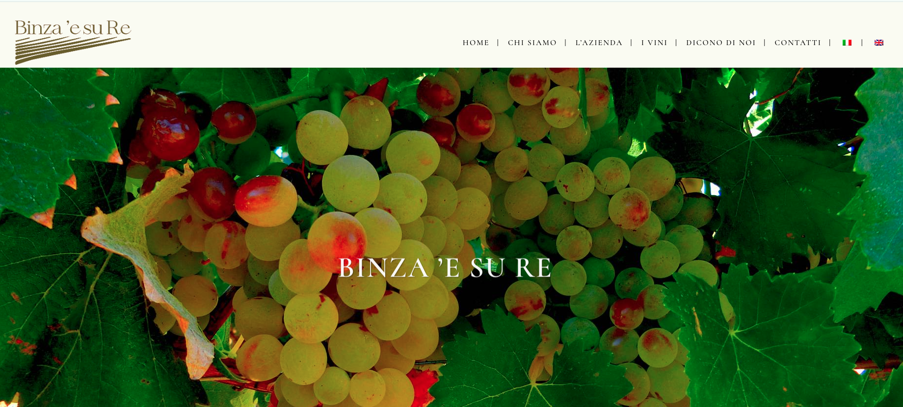
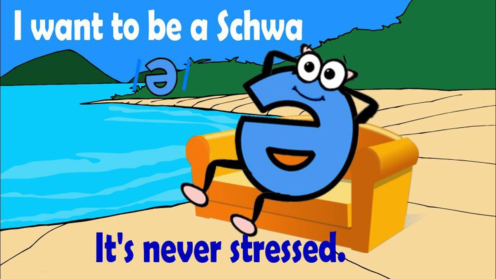

%%{init: {"flowchart": {"wrappingWidth": 420}}}%%
flowchart LR
CP["Évolution phonétique"] --> AJ["<b>Ajout</b> d'un son"]
CP --> SU["<b>Suppression</b> d'un son<br><i>terme général : amuïssement</i>"]
CP --> CH["<b>Changement</b> d'un son"]
AJ --> AJ1["<b>prothèse</b> : au début du mot<br><b>épenthèse</b> : entre deux consonnes"]
SU --> SU1["<b>aphérèse</b> : au début du mot<br><b>syncope</b> : à l'intérieur du mot<br><b>apocope</b> : à la fin du mot<br><b>haplologie</b> : séquence doublée"]
CH --> CH1["le son change de place<br><b>métathèse</b>"]
CH --> CH2["une dimension du son change<br>le nom dit <b>ce que le son devient</b>"]
CH2 --> V["<b>voyelles</b><br>fermeture · ouverture<br>antériorisation · centralisation<br>nasalisation · dénasalisation<br>diphtongaison · monophtongaison<br>consonification · allongement compensatoire"]
CH2 --> C["<b>consonnes</b><br>palatalisation · dépalatalisation<br>vélarisation · uvularisation<br>affrication · désaffrication · assibilation<br>lénition : sonorisation (voisement),<br>fricativisation (spirantisation)<br>vocalisation · dégémination · rhotacisme"]
V --> VA["<b>assimilation</b><br>ex. nasalisation, monophtongaison"]
V --> VD["<b>dissimilation</b><br>ex. [ei] > [oi]"]
C --> CA["<b>assimilation</b><br>ex. palatalisation, lénition"]
C --> CD["<b>dissimilation</b><br>ex. [r]…[r] > [l]…[r]"]
Évolutions phonologiques
6.1 Rappel : les sons du français (API)
6.1.1 Les voyelles : quatre dimensions
| Dimension | Niveau | Voyelles du français |
|---|---|---|
| Aperture | fermée | [i] [y] [u] |
| mi-fermée | [e] [ø] [o] | |
| moyenne | [ə] | |
| mi-ouverte | [ɛ] [œ] [ɔ] [ɛ̃] [œ̃] [ɔ̃] | |
| ouverte | [a] [ɑ] [ɑ̃] | |
| Antériorité | antérieure | [i] [y] [e] [ø] [ɛ] [œ] [a] [ɛ̃] [œ̃] |
| centrale | [ə] | |
| postérieure | [u] [o] [ɔ] [ɑ] [ɔ̃] [ɑ̃] | |
| Arrondissement | non arrondie | [i] [e] [ɛ] [a] [ɑ] [ɛ̃] [ɑ̃] |
| arrondie | [y] [ø] [œ] [u] [o] [ɔ] [ə] [œ̃] [ɔ̃] | |
| Nasalité | orale | [i] [y] [u] [e] [ø] [o] [ə] [ɛ] [œ] [ɔ] [a] [ɑ] |
| nasale | [ɛ̃] [œ̃] [ɔ̃] [ɑ̃] |
6.1.2 Les voyelles orales du français
| antérieures non arrondies | antérieures arrondies | centrale | postérieures | |
|---|---|---|---|---|
| fermées | [i] | [y] | [u] | |
| mi-fermées | [e] | [ø] | [o] | |
| moyenne | [ə] | |||
| mi-ouvertes | [ɛ] | [œ] | [ɔ] | |
| ouvertes | [a] | [ɑ] |
- Les voyelles nasales [ɛ̃] [œ̃] [ɔ̃] [ɑ̃] ont la même place que [ɛ] [œ] [ɔ] [ɑ].
- Parmi les postérieures, [u] [o] [ɔ] sont arrondies, [ɑ] est non arrondie.
6.1.3 Les consonnes : trois dimensions
| Dimension | Niveau | Consonnes du français |
|---|---|---|
| Lieu d’articulation | bilabiale | [p] [b] [m] |
| labiodentale | [f] [v] | |
| dentale | [t] [d] [n] | |
| alvéolaire | [s] [z] [l] | |
| palatale | [ʃ] [ʒ] [ɲ] | |
| vélaire | [k] [ɡ] [ŋ] | |
| uvulaire | [ʁ] | |
| Mode d’articulation | occlusive | [p] [b] [t] [d] [k] [ɡ] |
| fricative | [f] [v] [s] [z] [ʃ] [ʒ] [ʁ] | |
| nasale | [m] [n] [ɲ] [ŋ] | |
| latérale | [l] | |
| Voisement | sourde | [p] [t] [k] [f] [s] [ʃ] |
| sonore | [b] [d] [ɡ] [v] [z] [ʒ] [m] [n] [ɲ] [ŋ] [l] [ʁ] |
6.1.4 Les consonnes du français
| bilabiale | labiodentale | dentale | alvéolaire | palatale | vélaire | uvulaire | |
|---|---|---|---|---|---|---|---|
| occlusive | [p] [b] | [t] [d] | [k] [ɡ] | ||||
| fricative | [f] [v] | [s] [z] | [ʃ] [ʒ] | [ʁ] | |||
| nasale | [m] | [n] | [ɲ] | [ŋ] | |||
| latérale | [l] |
- Dans une case à deux symboles : sourde à gauche, voisée à droite.
- Glides : [j] (palatale), [ɥ] (labio-palatale), [w] (labio-vélaire).
Les affriquées [ts] [dz] [tʃ] [dʒ] n’existent pas dans le système du français standard actuel, mais elles jouent un grand rôle dans l’histoire du français.
6.2 Introduction
- La phonétique est un des domaines sur lesquels opère le changement linguistique.
Ce qui change en évolution phonétique, c’est la prononciation d’un phonème ou d’un groupe de phonèmes avec pour conséquence une prononciation altérée du mot dans son intégralité.
| LATIN | FRANÇAIS MODERNE |
|---|---|
| mansionem | maison |
| casam | chez |
| vinum | vin |
6.2.1 Évolution phonétique
La prononciation des phonèmes et des mots n’évolue pas de manière individuelle, c.-à-d. les mots ne subissent pas des évolutions phonétiques idiosyncratiques qu’on ne retrouve pas ailleurs dans la même langue.
Des mots ayant une structure phonétique analogue ont tendance à évoluer de la même manière.
Cela nous permet d’établir des lois phonétiques, c.-à-d. des évolutions phonétiques qui se produisent dans les mêmes contextes phonétiques et sous les mêmes conditions.
6.2.1.1 Exemple : du latin aux langues romanes
| Latin | Français | Roumain | Sarde | Italien | Espagnol | Portugais |
|---|---|---|---|---|---|---|
| cupam | coupe | cupă | cuppa | coppa | copa | copa |
| capram | chèvre | capră | craba | capra | cabra | cabra |
| caballum | cheval | cal | caddu | cavallo | caballo | cavalo |
| mutare | muer | muta | mudare | mutare | mudar | mudar |
| videre | voir | vedea | bíere | vedere | ver | ver |
Grâce à des études comparatives systématiques du latin et des langues romanes, on a pu établir des lois phonétiques du latin aux langues romanes.
Ces lois se subdivisent en deux groupes :
Celles qui se manifestent dans (presque) toutes les langues romanes et qui se sont ainsi produites avant la diversification du latin, c.-à-d. en latin vulgaire.
Celles qui se manifestent dans une seule langue romane et qui se sont ainsi produites après la diversification du latin sur le territoire français, italien, espagnol, portugais, roumain, etc.
6.2.2 Trois facteurs à prendre en compte
6.2.2.1 La syllabe
La syllabe est cruciale dans l’évolution phonétique : les sons évoluent selon la structure de la syllabe dont ils font partie.
- Lorsque deux consonnes sont contiguës, ces deux consonnes sont réparties entre deux syllabes chaque fois que c’est possible.
- Seule exception: la séquence Occlusive + Trille ou Approximante (muta cum liquida, notée TR) n’est jamais séparée.
- Dans tous les autres cas, la syllabation française se fait de manière à ce que les syllabes soient ouvertes (c.-à-d. se terminent par une voyelle au noyau ou sans coda).
- Muta cum liquida (latin : « muette avec liquide ») : une occlusive ou une fricative (p, b, t, d, k, g, f, v) suivie d’une liquide (r ou l) : pr, br, tr, dr, kr, gr, fr, vr ; pl, bl, kl, gl, fl.
- On note ce groupe TR : T = l’occlusive (ou la fricative), R = la liquide, r ou l. Attention : R ne veut pas dire seulement r !
- Les deux consonnes restent ensemble au début de la syllabe suivante (attaque branchante) : pa.trem, ta.bla, dou.ble.
- Conséquences : TR ne ferme pas la syllabe qui précède (pas d’entrave) ; dans les groupes de consonnes, TR se comporte comme un bloc.
Les syllabes ouvertes se terminent par une voyelle. Structurellement, une syllabe est ouverte si elle présente :
Le schéma \((C/G) + V\) : ta-bleau, bien
Le schéma \((C/G) + V\) devant \(C_{occlusive/fricative} + [ʁ]/[l] (+ V)\) : pé-tri-fi-ca-tion, dou-ble
La voyelle d’une syllabe ouverte est une voyelle libre.
Les syllabes fermées se terminent par une consonne. Structurellement, une syllabe est fermée si la voyelle centrale est suivie de deux consonnes (sauf la séquence \(C_{occlusive/fricative} + [ʁ]\) ou \([l]\)) ou d’une consonne en fin de mot : par-tie, four-chette.
La voyelle d’une syllabe fermée est une voyelle entravée.
6.2.2.2 L’accent tonique et l’accentuation latine
- Par exemple : les voyelles toniques se maintiennent mieux que les voyelles atones (sous forme altérée ou non).
- Longue : toute syllabe fermée (AR-GEN-TUM), et toute syllabe ouverte qui contient une diphtongue ou une voyelle longue (PA-RAU-LO, CAN-TĀ-RE).
- Brève : toute syllabe ouverte qui contient une voyelle brève (FA-CĔ-RE).
- TR (muta cum liquida) ne fait pas entrave : PA-TREM.
- Découper en syllabes ; une diphtongue forme une seule syllabe (CÁU-SA > chose).
- Numéroter depuis la fin (3-2-1) : l’accent est sur 2 si elle est longue, sinon sur 3.
- Si 2 est ouverte, trouver la quantité de sa voyelle :
- par la morphologie : -āre, -īre, -ātus, -tātem sont longs (VE-NĪ́-RE > venir) ;
- par l’hiatus : une voyelle devant une autre voyelle est brève (GÁU-DĬ-A > joie) ;
- par l’ancien français : l’accent y est sur la dernière syllabe (e muet exclu) et reste sur la même syllabe qu’en latin (DE-BḖ-RE > devoir, WĪ́-WĔ-RE > vivre).
| Signe | Placé au-dessus d’une voyelle, il indique… | Exemple |
|---|---|---|
| le macron ( ¯ ) ou l’apex antique | que la voyelle est longue | ā, ē |
| la brève ( ˘ ) | que la voyelle est brève | ă |
| l’accent aigu | la syllabe tonique (dans certaines grammaires modernes) | amántem |
| LATIN CLASSIQUE | FRANÇAIS MODERNE |
|---|---|
| sēcūrum[sekurum] | sûr[syʁ] |
| căballum[kabalum] | cheval[ʃəval] |
| mūrum[murum] | mur[myʁ] |
6.2.2.2.0.1 Types de mots selon la syllabe tonique
Mots oxytons : des mots accentués sur la dernière syllabe.
- ca.fé, ta.bleau, stra.té.gie
Mots paroxytons : des mots accentués sur la pénultième syllabe (par ex. en latin).
- pe.dem (‘pied’), ar.mum (‘arme’)
Mots proparoxytons : des mots accentués sur l’antépénultième syllabe.
- a.ni.ma (‘âme’)
Mots clitiques : des mots non accentués (par ex. en français).
- Le, mon, ce, il, à, de
6.2.2.3 La position relative des segments
6.2.2.3.1 Les syllabes
- Par exemple : les voyelles atones initiales se maintiennent mieux que les voyelles atones finales (sous forme altérée ou non).
| LATIN CLASSIQUE | FRANÇAIS MODERNE |
|---|---|
| murum[murum] | mur[myʁ] |
| caballum[kabalum] | cheval[ʃəval] |
| securum[sekurum] | sûr[syʁ] |
latin dormitorium (‘dortoir’)
| dor | mi | to | ri | um |
|---|---|---|---|---|
| initiale | prétonique interne | tonique | posttonique interne | finale |
Les mots toniques contiennent en principe une seule voyelle tonique. Seuls les mots longs en ont parfois deux, l’une portant l’accent primaire et l’autre l’accent secondaire.
En français, accent secondaire (optionnel) sur les mots de contenu : alternance de syllabes fortes et de syllabes faibles.
- pastrami /ˌpa.stʀa.ˈmi/
- conjugaison /kɔ̃.ˌʒy.gɛ.ˈzɔ̃/
- confident /ˌkɔ̃.fi.ˈdɑ̃/ 4s. capital /ˌka.pi.ˈtal/
- capitaliste /ka.ˌpi.ta.ˈlist.ə/
néonatalogie
6.2.2.3.2 Voyelles contiguës
Si deux voyelles se succèdent, elles peuvent :
Être séparées par une coupe syllabique et constituer deux syllabes individuelles ; les deux voyelles sont en position de « hiatus ».
- latin hodie [hodie] (‘aujourd’hui’)
- latin fui [fui] (‘j’ai été’)
- français nuage [nyaʒ]
Appartenir à la même syllabe, pour former une diphtongue ; une des deux voyelles évolue vers un glide ; selon la position du glide, on distingue des diphtongues :
Les diphtongues s’appuient sur le phénomène de synérèse, qui se définit comme la fusion de deux voyelles contiguës en une seule syllabe.
Le français moderne ne connaît pas de diphtongues, contrairement à l’ancien français.
6.2.2.3.3 Position des consonnes
La position des consonnes à l’intérieur du mot est cruciale pour leur évolution phonétique.
Il y a trois types de consonnes selon leur position dans le mot :
- initiale
- intervocalique
- finale
6.3 Typologie d’évolutions phonétiques
Le changement phonétique est régulier s’il se produit dans tous les contextes qui conditionnent le changement phonétique dans la même aire linguistique.
| LATIN CLASSIQUE | FRANÇAIS MODERNE | Changement additionnel |
|---|---|---|
| datum | > dé | [a] > [e] |
| pratum | > pré | syncope du [t], apocope de [u] et [m] |
| natum | > né | réduction syllabique |
| LATIN CLASSIQUE | FRANÇAIS MODERNE | BILAN |
|---|---|---|
| centum | > cent | |
| cervum | > cerf | |
| ceram | > cire | |
| circulum | > cercle | |
| cinerem | > cendre | [k] > [s] devant [e] ou [i] |
| LATIN CLASSIQUE | FRANÇAIS MODERNE | BILAN |
|---|---|---|
| campum | > champ | |
| cantare | > chanter | |
| capram | > chèvre | [k] > [ʃ] devant [a] |
| LATIN CLASSIQUE | FRANÇAIS | BILAN |
|---|---|---|
| carum | > cher | |
| carrum | > char | [r] > [ʁ] |
| ESPAGNOL | BILAN |
|---|---|
| caro | [r] > [ɾ] |
| carro | [r] > [r] |
6.3.1 Deux changements phonétiques généraux
6.3.2 Assimilation
Un son devient similaire à un autre son qui se trouve d’habitude dans le contexte phonétique adjacent.
| LATIN CLASSIQUE | ITALIEN | BILAN |
|---|---|---|
| octo | > otto | |
| noctem | > notte | |
| factum | > fatto | [k] > [t] |
6.3.2.1 Trois types d’assimilation
Totale vs partielle :
latin octo > italien otto
je sais pas > j’sais pas
Par contact vs par distance :
latin octo > italien otto
allemand eine Nacht vs zwei Nächte [naxt] vs [nɛçtə]
Progressive vs régressive (c.-à-d. anticipatoire) :
français cheveu [ʃəvø] prononciation lente vs [ʃfø] prononciation rapide
latin octo > italien otto
allemand eine Nacht vs zwei Nächte
6.3.3 Dissimilation
Un son se différencie d’un autre son, celui-ci pouvant être à une certaine distance phonétique.
| LATIN CLASSIQUE | FRANÇAIS | ITALIEN | ESPAGNOL | ANGLAIS |
|---|---|---|---|---|
| peregrinus | > pèlerin | pellegrino | peregrino | pilgrim |
| arbor | > arbre | árbol |
- La dissimilation est un changement plus occasionnel que l’assimilation.
6.3.4 Changements phonétiques spécifiques
Trois cas : on ajoute un son, on supprime un son, ou un son change.
6.3.5 Ajout d’un son
6.3.5.1 Prothèse
| LATIN CLASSIQUE | FRANÇAIS | ESPAGNOL |
|---|---|---|
| scholam | > école | escuela |
| stellam | > étoile | estrella |
| stabulam | > étable | establo |
| spinam | > épine | espina |
Ajout d’un son au début d’un mot.
La prothèse entraîne un accroissement syllabique.
Voyelle ajoutée : voyelle « prothétique ».
6.3.5.2 Épenthèse
| LATIN CLASSIQUE | FRANÇAIS |
|---|---|
| numerum | > nombre |
| cameram | > chambre |
| cumulum | > comble |
| essere | > a.français estre > françaismoderne être |
- Ajout d’une consonne entre deux autres consonnes, afin de faciliter la prononciation.
- Pas d’accroissement syllabique.
6.3.6 Suppression d’un son
6.3.6.1 Aphérèse
| LATIN CLASSIQUE | FRANÇAIS MODERNE | ESPAGNOL |
|---|---|---|
| apothecam (‘magasin de vins’) | > bodega | |
| Antoine > Toine |
- Suppression d’un son, d’habitude une voyelle, au début d’un mot.
- L’aphérèse entraîne une réduction syllabique.
6.3.6.2 Syncope
| LATIN CLASSIQUE | FRANÇAIS | ESPAGNOL | ITALIEN |
|---|---|---|---|
| populum | > peuple | pueblo | popolo |
| calidum | > chaud | cálido | caldo |
| viridem | > vert | verde | verde |
Suppression d’un son, typiquement une voyelle, à l’intérieur d’un mot.
La voyelle syncopée est atone et soit prétonique, soit posttonique.
La syncope entraîne une réduction syllabique.
Une consonne peut également être syncopée : français nordman > normand
6.3.6.3 Apocope
| LATIN CLASSIQUE | FRANÇAIS | ESPAGNOL | ITALIEN |
|---|---|---|---|
| panem | > pain | pan | pane |
| petram | > pierre | piedra | pietra |
| bonum | > bon | bueno | buono |
Suppression d’un son, à la fin d’un mot.
L’apocope est particulièrement fréquente dans le passage du latin au français.
L’apocope entraîne une réduction syllabique.
6.3.6.4 Haplologie
Simplification d’une séquence phonétique doublée ou proche.
FRANÇAIS :
mysticicisme > mysticisme
pacificisme > pacifisme
Qu’est-ce tu fais ?
ANGLAIS :
- Anglaland > England
L’haplologie entraîne une réduction syllabique.
6.3.7 Modification d’un son
6.3.7.2 Métathèse
| LATIN CLASSIQUE | ESPAGNOL | FRANÇAIS | ITALIEN | ANGLAIS |
|---|---|---|---|---|
| parabolam | > palabra | |||
| berbicem | > brebis | berbice | ||
| crocodilus/cocodrilus | > cocodrilo | a.français cocodrille > françaismoderne crocodile | coccodrillo | crocodile |
- Changement de place d’un son
6.3.7.3 Rhotacisme
| LATIN CLASSIQUE N.M.SG | LATIN CLASSIQUE GEN.M.SG |
|---|---|
| flos (‘fleur’) | > *flosis > floris |
| honos (‘honneur’) | > *honosis > honoris |
- Changement d’un phonème, très souvent un \([s]\), vers un \([r]\).
- Le rhotacisme est très rare dans l’évolution du (latin au) français, mais plus fréquent dans l’évolution du (indo-européen au) latin (par ex. infinitif : -ese/-ire > -ere/-ire).
6.3.7.4 Allongement compensatoire
| LATIN CLASSIQUE | FRANÇAIS |
|---|---|
| fenestram | > fenêtre |
| pastam | > pâte |
| essere | > a.français estre > françaismoderne être |
- Allongement d’une voyelle suite à la syncope d’une consonne (compensation).
- En français moderne, l’allongement compensatoire est marqué par l’accent circonflexe.
6.3.7.5 Monophtongaison
LATIN CLASSIQUE > LATIN VULGAIRE
poenam [ɔj] > poenam [e]
caelum [aj] > caelum [ɛ]
causam [aw] > causam [ɔ]
Passage d’une diphtongue à une monophtongue.
| LATIN CLASSIQUE | FRANÇAIS | ESPAGNOL | ITALIEN |
|---|---|---|---|
| aurum [aw] | > or | oro | oro |
6.3.7.6 Diphtongaison
| LATIN CLASSIQUE | ANCIEN FRANÇAIS | FRANÇAIS MODERNE |
|---|---|---|
| florem | > flour (cf. angl.) | > fleur [eu] > fleur [œ] |
Passage d’une monophtongue à une diphtongue.
Les diphtongaisons affectent surtout les voyelles toniques et libres.
Les diphtongaisons sont très fréquentes dans le passage du latin au français.
6.3.7.6.1 Types de diphtongaisons du latin au français
1. Diphtongaison romane
| Latin | Français | Espagnol | Italien |
|---|---|---|---|
| pedem | pied | pie | piede |
| novum | neuf | nuevo | nuovo |
Chronologie : \(3^e-4^e\) s.
Portée : le territoire roman
Voyelles affectées : [ɔ] et [ɛ]
2. Diphtongaison française
Chronologie : \(6^e\) s.
Portée : le territoire gaulois
Voyelles affectées : [e], [o] et [a]
- Le sort du \([e]\) : \([e] > [ei]\) au \(6^e\) s. \(> [oi]\) au milieu du \(12^e\) s. \(> [ue]\) à la fin du \(12^e\) s. \(> [wɛ]\) ou \([wa]\) au \(13^e\) s. :
| LATIN CLASSIQUE | FRANÇAIS | BILAN |
|---|---|---|
| serum | > soir | [e] > [wa] |
| telum | > toile | |
| tres | > trois |
- Le sort du \([a]\) : \([a] > [ae]\) au \(6^e\) s. \(> [æ]\) au \(7^e\) s. \(> [e]\) \(9^e\) s. (selon la loi de position) :
| LATIN CLASSIQUE | FRANÇAIS | BILAN |
|---|---|---|
| pratum | > pré | [a] > [e] en syllabe ouverte |
| claritatem | > clarté | |
| amare | > aimer | |
| marem | > mer | [a] > [ɛ] en syllabe fermée |
| patrem | > père | |
| salem | > sel |
- Le sort du \([o]\) : \([o] > [ou]\) au \(6^e\) s. \(> [eu]\) au \(11^e\) s. \(> [ø]\) au \(13^e\) s. (loi de position) :
| LATIN CLASSIQUE | FRANÇAIS | BILAN |
|---|---|---|
| nepotem | > neveu | [o] > [ø] en syllabe ouverte |
| duos | > deux | |
| florem | > fleur | [o] > [œ] en syllabe fermée |
| gulam | > gueule |
6.3.7.7 Lénition
Assimilation d’une consonne intervocalique sous forme d’une sonorisation (voisement), qui peut être suivie par une fricativisation (spirantisation) et enfin une syncope (= sonorisation intervocalique) : tout mouvement vers le pôle [+sonore] dans l’échelle de sonorité :
[− sonore] occlusives › fricatives › nasales › liquides › glides › voyelles [+ sonore]
6.3.8 Résumé terminologique : les changements phonétiques
6.4 Synthèse terminologique
>: « devient », entre deux formes de mots (latin murum > français mur)→: « devient », dans la notation d’une loi phonétique (ə → ∅ / voyelle tonique ___)*devant une forme : forme reconstruite, non attestée (latin tabula > *tabla > français table)- /…/ : transcription phonologique · […] : transcription phonétique
6.4.1 La syllabe
| Terme | Définition |
|---|---|
| syllabe ouverte | syllabe qui se termine par une voyelle (ta-bleau) |
| syllabe fermée | syllabe qui se termine par une consonne (par-tie) |
| voyelle libre | voyelle d’une syllabe ouverte |
| voyelle entravée | voyelle d’une syllabe fermée |
| hiatus | deux voyelles qui se suivent et appartiennent à deux syllabes différentes (français nu-age) |
| diphtongue | deux voyelles qui se suivent dans la même syllabe, dont l’une est devenue un glide |
6.4.2 L’accent et la position
| Terme | Définition |
|---|---|
| voyelle tonique | voyelle qui porte l’accent |
| voyelle atone | voyelle qui ne porte pas l’accent |
| oxyton | mot dont l’accent est sur la dernière syllabe |
| paroxyton | mot dont l’accent est sur l’avant-dernière syllabe |
| proparoxyton | mot dont l’accent est sur l’antépénultième syllabe |
| clitique | mot sans accent propre (le, mon, il) |
Les cinq positions d’une syllabe dans le mot, latin dormitorium :
| dor | mi | to | ri | um |
|---|---|---|---|---|
| initiale | prétonique interne | tonique | posttonique interne | finale |
6.4.3 La loi phonétique
Évolution qui se produit de la même manière dans tous les mots qui présentent le même contexte phonétique, à la même époque et dans la même langue.
6.4.4 Noter une loi phonétique
A → B / C ___ D
« A devient B quand il se trouve après C et avant D. »
| Symbole | Sens |
|---|---|
| A | le son qui change |
| → | devient |
| B | le résultat du changement |
| / | « dans le contexte suivant » |
| ___ | la place du son qui change |
| C et D | ce qui précède et ce qui suit le son qui change (l’un des deux peut manquer) |
| ∅ | rien : A → ∅ = suppression (syncope, apocope…) · ∅ → B = ajout d’un son |
| # | frontière de mot : #___ = au début du mot · ___# = en fin de mot |
| V / C | n’importe quelle voyelle / n’importe quelle consonne |
Le symbole d’un son supprimé (syncope, apocope…) est ∅ (ensemble vide), et non ø : ø est une voyelle de l’API, celle de peu.
| Loi | Notation | Exemple |
|---|---|---|
| A | ə → ∅ / ___ voyelle tonique | a.français seür[səˈyr] > français sûr [syʁ] |
| B | ə → ∅ / voyelle tonique ___ | a.français vie[ˈviə] > français vie [vi] |
| C | ə → ∅ / voyelle atone ___ | français dévouement[devuəˈmɑ̃] > [devuˈmɑ̃] |
Comment lire la loi A : « ə devient rien (= syncope) quand il se trouve devant une voyelle tonique. »
6.4.5 Ajout d’un son
| Terme | Définition | Exemple |
|---|---|---|
| prothèse | ajout d’un son au début d’un mot | latin scholam > français école |
| épenthèse | ajout d’une consonne entre deux autres consonnes | latin cameram > français chambre |
6.4.6 Suppression d’un son
| Terme | Définition | Exemple |
|---|---|---|
| amuïssement | terme général : un son cesse d’être prononcé | a.français petit[pətit] > français petit [pəti] |
| aphérèse | suppression d’un son, d’habitude une voyelle, au début d’un mot | Antoine > Toine |
| syncope | suppression d’un son, typiquement une voyelle, à l’intérieur d’un mot | latin populum > français peuple |
| apocope | suppression d’un son, d’habitude une voyelle, à la fin d’un mot | latin panem > français pain |
| haplologie | simplification d’une séquence phonétique doublée ou proche | pacificisme > pacifisme |
6.4.7 Changement d’un son : la relation avec les sons voisins
| Terme | Définition | Exemple |
|---|---|---|
| assimilation | un son devient similaire à un autre son du contexte phonétique adjacent | latin factum > italien fatto |
| dissimilation | un son se différencie d’un autre son, qui peut être à une certaine distance | latin peregrinus > français pèlerin |
| métathèse | changement de position d’un son | latin berbicem > français brebis |
6.4.8 Changement d’un son : ce que le son devient
| Terme | Le son devient… | Exemple |
|---|---|---|
| palatalisation | plus palatal | latin campum[k] > français champ [ʃ] |
| affrication | une affriquée | français tu dis[ty di] > français québécois [tsy dzi] |
| nasalisation | nasal | latin vinum > français vin[vɛ̃] |
| rhotacisme | un[r] | latin *flosis > floris |
| allongement compensatoire | long, après la syncope d’une consonne | latin pastam > français pâte |
| diphtongaison | une diphtongue | latin pedem > français pied |
| monophtongaison | une voyelle simple | latin aurum[aw] > français or [ɔ] |
6.4.9 Lénition (consonnes)
Évolution d’une consonne vers une articulation moins forte, surtout en position intervocalique. Elle se fait souvent par étapes : sonorisation (voisement), puis fricativisation (spirantisation), puis syncope.
| Terme | Le son devient… | Exemple |
|---|---|---|
| sonorisation (voisement) | sonore | [t] > [d] : latin vita > a.français vide |
| fricativisation (spirantisation) | une fricative | [b] > [β] > [v] |
| vocalisation | une voyelle ou un glide | [l] > [w] : latin alba > français aube |
| syncope | rien | latin vita > a.français vide > français vie |
6.5 Exercices (Boutier)
Quel changement touche le segment en gras ? Nommez-le avec les termes du cours.
Exercice 1 : lat. pastam > français pâte
Exercice 2 : lat. stellam > français étoile
Exercice 3 : lat. caballum > français cheval [ʃəval]
Exercice 4 : lat. berbicem > français brebis
Exercice 5 : lat. albam > français aube
Exercice 6 : lat. calidum > français chaud
Exercice 7 : lat. peregrinum > français pèlerin
Exercice 8 : lat. murum [u] > français mur [y]
Exercice 9 : lat. planam [ã]> français plaine [plɛn]
Exercice 10 : lat. numerum > français nombre
Exercice 11 : lat. aurum > français or
Exercice 12 : lat. campum [k] > français champ [ʃ]
Exercice 13 : lat. vitam > a.français vide
Exercice 14 : français pacificisme > pacifisme
Exercice 15 : lat. pedem > français pied
6.5.1 Exercice 1
Quel changement touche le segment souligné ? Nommez-le avec les termes du cours.
- lat. pastam > français pâte
Allongement compensatoire
Le [s] devant consonne subit une syncope et la voyelle précédente s’allonge ; l’accent circonflexe en garde la trace.
V + [s] → [Vː] / ___ C
Source de l’exemple : Diapo Allongement compensatoire (pastam > pâte) ; HistoLF, fiche 18.
6.5.2 Exercice 2
Quel changement touche le segment souligné ? Nommez-le avec les termes du cours.
- lat. stellam > français étoile
Prothèse
Ajout d’un son au début du mot, devant le groupe s + consonne.
∅ → [e] / # ___ [s]C
Source de l’exemple : Diapo Prothèse.
6.5.3 Exercice 3
Quel changement touche le segment souligné ? Nommez-le avec les termes du cours.
- lat. caballum > français cheval [ʃəval]
Centralisation
Le [a] initial devient [ə] : le son devient plus central.
[a] → [ə] / # Cpalatale ___
Source de l’exemple : Tableau Voyelles : où et comment ? ; HistoLF, fiche 21.
6.5.4 Exercice 4
Quel changement touche le segment souligné ? Nommez-le avec les termes du cours.
- lat. berbicem > français brebis
Métathèse
Changement de position d’un son : le [r] passe devant la voyelle.
[e r] → [r e] / # C ___
Source de l’exemple : Diapo Métathèse.
6.5.5 Exercice 5
Quel changement touche le segment souligné ? Nommez-le avec les termes du cours.
- lat. albam > français aube
Vocalisation
Le [l] devant consonne devient [w] (puis se fond avec la voyelle) : une consonne devient un glide.
[l] → [w] / V ___ C
6.5.6 Exercice 6
Quel changement touche le segment souligné ? Nommez-le avec les termes du cours.
- lat. calidum > français chaud
Syncope
Suppression de la voyelle atone à l’intérieur du mot.
V → ∅ / V́C ___ CV (posttonique interne)
Source de l’exemple : Diapo Syncope.
6.5.7 Exercice 7
Quel changement touche le segment souligné ? Nommez-le avec les termes du cours.
- lat. peregrinum > français pèlerin
Dissimilation
Deux [r] dans le même mot : le premier se différencie et devient [l].
[r] → [l] / ___ … [r]
Source de l’exemple : Diapo Dissimilation.
6.5.8 Exercice 8
Quel changement touche le segment souligné ? Nommez-le avec les termes du cours.
- lat. murum [u] > français mur [y]
Antériorisation
Le [u] postérieur devient [y] antérieur : le son devient plus antérieur.
[u] → [y] (changement non conditionné)
Source de l’exemple : Tableau Voyelles : où et comment ?.
6.5.9 Exercice 9
Quel changement touche le segment souligné ? Nommez-le avec les termes du cours.
- lat. planam > français plaine [plɛn]
Dénasalisation
La voyelle, nasalisée devant [n], redevient orale parce que le [n] est suivi d’une voyelle (syllabe ouverte).
voyelle nasale → voyelle orale / ___ N
6.5.10 Exercice 10
Quel changement touche le segment souligné ? Nommez-le avec les termes du cours.
- lat. numerum > français nombre
Épenthèse
Ajout d’une consonne [b] entre deux consonnes ([m] et [r]) après la syncope.
∅ → [b] / [m] ___ [r]
Source de l’exemple : Diapo Épenthèse.
6.5.11 Exercice 11
Quel changement touche le segment souligné ? Nommez-le avec les termes du cours.
- lat. aurum > français or
Monophtongaison
La diphtongue [aw] devient une voyelle simple.
[aw] → [ɔ]
Source de l’exemple : Diapo Monophtongaison.
6.5.12 Exercice 12
Quel changement touche le segment souligné ? Nommez-le avec les termes du cours.
- lat. campum [k] > français champ [ʃ]
Palatalisation
Le [k] devant [a] devient plus palatal.
[k] → [tʃ] / ___ [a] (puis [tʃ] → [ʃ] : désaffrication)
Source de l’exemple : Tableau Consonnes : lieu et mode d’articulation.
6.5.13 Exercice 13
Quel changement touche le segment souligné ? Nommez-le avec les termes du cours.
- lat. vitam > a.français vide
Sonorisation (voisement)
Le [t] intervocalique devient voisé : [t] > [d].
[t] → [d] / V ___ V
Source de l’exemple : Tableau Consonnes : force, voisement et statut.
6.5.14 Exercice 14
Quel changement touche le segment souligné ? Nommez-le avec les termes du cours.
- français pacificisme > pacifisme
Haplologie
Simplification d’une séquence phonétique doublée.
Source de l’exemple : Diapo Haplologie.
6.5.15 Exercice 15
Quel changement touche le segment souligné ? Nommez-le avec les termes du cours.
- lat. pedem > français pied
Diphtongaison
Le [ɛ] tonique libre devient une diphtongue [jɛ].
[ɛ] → [ie] / tonique, syllabe ouverte
6.5.16 Exercice de dépassement
Compléter l’évolution depáne > pɛ̃
Évolution détaillée
- > páane
- > páɛne (6e s.) – diphtongaison de [a] tonique libre
- > … (7e s.) – apocope de la voyelle finale ; fermeture du second élément de la diphtongue
- > … (11e s.) – …
- > … (12e s.) – fermeture du premier élément de la diphtongue
- > … (16e s.) – monophtongaison de la diphtongue
- > … (16e-17e s.) – apocope de la consonne nasale finale
Latin vulgaire páne · français moderne pɛ̃ · syllabes <pá><ne>
páne > páane > páɛne (6e s.) > páin (7e s.) > pãĩn (11e s. : nasalisation de la diphtongue devant N) > pẽĩn (12e s.) > pẽn (16e s.) > pɛ̃ (16e-17e s.)
6.6 Les changements dans l’histoire du français
6.6.1 2e s. av. J.-C.
Observez la voyelle soulignée entre le latin et le latin tardif.
| latin | latin tardif | français |
|---|---|---|
| folia | fo.lja | feuille |
| vīnea | vi.nja | vigne |
| vidua | vi.dwa | veuve |
| annuāle | an.nwa.le | annuel |

1. Quel son suit la voyelle soulignée en latin ?
Une autre voyelle : elle est en hiatus (fo-li-a, vi-du-a).
2. Que deviennent i, e d’un côté, u, o de l’autre ?
i, e deviennent la glide palatale [j] ; u, o deviennent la glide labio-vélaire [w]. La voyelle perd son statut de noyau de syllabe : fo-li-a (3 syllabes) → fo-lja (2 syllabes).
3. Quel est ce changement ?
Consonification latine
- i, e (voyelles antérieures) → [j] (glide palatale) / en hiatus
- u, o (voyelles postérieures) → [w] (glide labio-vélaire) / en hiatus
- a ne subit pas cet effet
6.6.2 1er s. ap. J.-C.
Observez ce que deviennent k et g devant i et e entre le latin et l’ancien français, selon leur contexte.

k + i, e
| contexte | latin | ancien français | français |
|---|---|---|---|
| # ___ | centu | [ʦ]ent | cent |
| C ___ | porcellu | por[ʦ]el | pourceau |
| V ___ V | placēre | pla[jʣ]ir | plaisir |
g + i, e
| contexte | latin | ancien français | français |
|---|---|---|---|
| # ___ | gente | [ʤ]ent | gent |
| C ___ | argentu | ar[ʤ]ent | argent |
| V ___ V | flagellu | fla[jj]el | fléau |
1. Que deviennent k et g au début du mot et après consonne ?
Des affriquées : k → [ʦ] (cent, pourceau), g → [ʤ] (gent, argent).
2. Et entre voyelles ?
k → [jʣ] (plaisir), g → yod géminé [jj] (flaiel) : entre voyelles, le résultat est plus faible.
3. Quel est ce changement ?
Palatalisation romane : k, g + i, e
- k → /ʦ/ / {#, C} ___ i, e
- k → /jʣ/ / V ___ i, e
- g → /ʤ/ / {#, C} ___ i, e
- g → géminé /jj/ / V ___ i, e
- Lat. Caesar [k] a été emprunté très tôt par le germanique : allemand Kaiser garde le [k], alors que l’italien Cesare a [tʃ].
- Lat. centum : sarde (logoudorien) kentu n’a pas palatalisé.
6.6.3 1er s. ap. J.-C.
Observez nj et lj entre le latin et le latin tardif.
| contexte | latin | latin tardif | français |
|---|---|---|---|
| V ___ V | montā[nj]a | monta[ɲɲ]a | montagne |
| V ___ V | cōnsi[lj]ārī | consi[ʎʎ]ari | conseiller |
| C ___ | insig[nj]a | insig[ɲ]a | enseigne |
| C ___ | al[lj]u | al[ʎ]u | ail |
1. Comment décrivez-vous les sons de départ [nj] et [lj] ?
Deux sons : une consonne ([n] nasale alvéolaire, [l] latérale alvéolaire) + une glide palatale [j].
2. Comment décrivez-vous les sons d’arrivée [ɲ] et [ʎ] ?
Un seul son : [ɲ] nasale palatale, [ʎ] latérale palatale. La consonne prend le lieu d’articulation de [j].
3. Quelle différence observez-vous selon le contexte ?
Entre voyelles, le son est géminé (ɲɲ, ʎʎ) ; après consonne, il est simple (ɲ, ʎ).
4. Quel est ce changement ?
Assimilation nj, lj > ɲɲ, ʎʎ
- nj, lj → ɲɲ, ʎʎ / V ___ V
- nj, lj → ɲ, ʎ / {#, C} ___
- L’assimilation (palatalisation) nj > ɲɲ, lj > ʎʎ est commune à toute la Romania, sauf nj en sarde (Lausberg 1967 : §§463-467).
- Exemple : lat. vīnea [vinja] > sarde binza, sans [ɲ] (cf. français vigne).

6.6.4 Latin tardif, 1er s.
Observez tj entre le latin et l’ancien français.
| contexte | latin | ancien français | français |
|---|---|---|---|
| C ___ | can[tj]ōne | chan[ʦ]on | chanson |
| C ___ | °for[tj]āre | for[ʦ]ier | forcer |
| V ___ V | ra[tj]ōne | rai[ʣ]on | raison |
1. Comment décrivez-vous le son de départ [tj] ?
Deux sons : [t] occlusive dentale sourde + une glide palatale [j].
2. Comment décrivez-vous les sons d’arrivée [ʦ] et [ʣ] ?
Un seul son : une affriquée (occlusion + friction sifflante), sourde [ʦ] ou sonore [ʣ].
3. Quelle différence observez-vous selon le contexte ?
Après consonne, l’affriquée est sourde [ʦ] ; entre voyelles, elle est sonore [ʣ].
4. Quel est ce changement ?
Assibilation tj > tsj (devenir une sifflante)
- tj → [ʦ] / C ___
- tj → [ʣ] / V ___ V
L’assibilation est très ancienne :
- toutes les langues romanes la pratiquent (Lausberg 1967 : §§452-455) ;
- de nombreuses inscriptions la notent :
- ‹ts› : Crescentsianus pour Crescentianus (140 ap. J.-C.) ;
- ‹tz› : Vincentzus pour Vincentius ;
- ‹s› : Tersia pour Tertia, Monsius pour Montius.
6.6.5 Latin tardif
Observez le groupe tl entre le latin et le latin tardif.
| latin | latin tardif | français |
|---|---|---|
| ve[t(u)l]u | ve[kl]u | vieil |
| si[t(u)l]a | si[kl]a | seille |
| vetustu | – | vétuste 🚨 |
1. Quel son disparaît dans vet(u)lu et sit(u)la ? Quel groupe de consonnes apparaît alors ?
La voyelle u (syncope) : [t] et [l] se retrouvent en contact (tl).
2. Que devient ce groupe tl ? Comment décrivez-vous [t] et [k] ?
tl → [kl]. Ce sont deux occlusives sourdes : [t] dentale, [k] vélaire. Seul le lieu d’articulation change, vers l’arrière.
3. Pourquoi vétuste n’a-t-il pas le même résultat que vieil ?
vetustu n’a pas de groupe t + l : il n’y a pas de syncope qui met [t] et [l] en contact.
4. Quel est ce changement ?
Vélarisation t.l > k.l
- tl, dl → [kl, gl]
- L’Appendix Probi (liste de « fautes » datée entre le 3e et le 5e s. selon les auteurs) corrige : vetulus non veclus, masculus non masclus, calida non calda. Les « fautes » montrent la prononciation réelle.
- L’évolution tl, dl > kl, gl se rencontre dans toute la Romania :
- vet(u)lu > roumain vechiu, italien vecchio, espagnol viejo, portugais velho ; ust(u)lāre > provençal usclar.

6.6.6 Latin tardif – ancien français
Observez les groupes de consonnes entre le latin et le français.
A
| latin | français |
|---|---|
| temptāre | tenter |
| sancta | sainte |
| galb(i)nu | jaune |
| mand(ū)cāre | manger |
B
| latin | français |
|---|---|
| umbra | ombre |
| rump(e)re | rompre |
| alt(e)ru | autre |
1. Combien de consonnes se suivent dans le mot latin (après la syncope de la voyelle entre parenthèses) ?
Trois consonnes : CCC (m-p-t, n-k-t, l-b-n, n-d-k ; m-b-r, m-p-r, l-t-r).
2. Que devient la consonne du milieu dans les mots A ?
Elle disparaît : CCC → C₁C₃ (tem(p)tāre > tenter).
3. Pourquoi est-elle maintenue dans les mots B ?
Les deux dernières consonnes forment un groupe TR (muta cum liquida : occlusive + liquide r ou l), qui reste ensemble au début de la syllabe suivante. On note C.TR (le point marque la coupe syllabique).
4. Quel est ce changement ?
CCC : syncope de la C médiane
- C → ∅ / C ___ C (syncope de la consonne médiane : CCC → C₁C₃)
- mais C.TR → maintenu
Un même mot peut connaître plusieurs résolutions. scand(a)lu (français moderne esclandre) donne :
- escandre (l > r) ;
- escanle (perte de t, d) ;
- escandele (maintien irrégulier de la voyelle atone) ;
- escande (perte de l).
6.6.7 Latin tardif, 2e s.
Observez la place du i entre le latin et le français.
A
| latin | français |
|---|---|
| paria | paire |
| bāsiāre | baiser |
| ma(n)siōne | maison |
B
| latin | français |
|---|---|
| cantiōne | chanson |
| °fortiāre | forcer |
| °captiāre | chasser |
1. Dans les mots A, où se trouve le i ([j]) en latin ? Et en français ?
En latin, il suit la consonne (pa-rja) ; en français, il la précède (pai-re) : C.j → j.C.
2. Pourquoi le i ne change-t-il pas de place dans les mots B ?
Une autre consonne précède le groupe (n-tj, r-tj, p-tj) : le i ne peut pas passer devant. La métathèse est bloquée.
3. Quel est ce changement ?
Métathèse
- C.j → j.C / V ___ V (C = r, s, ʦ ; aussi un groupe TR dont la liquide est r)
- C.j → maintenu / C ___ (métathèse bloquée)

6.6.8 Latin tardif, 2e-4e s.
6.6.9 Latin tardif, 2e-4e s.
Observez ce que deviennent [dj] et [gj] entre le latin et le latin tardif, selon leur contexte.
Contexte 1 (V ___ V)
| latin | latin tardif | français |
|---|---|---|
| gau[dj]a | gau[jj]a | joie |
| me[dj]ānu | me[jj]anu | moyen |
| exa[gj]u | exa[jj]u | essai |
Contexte 2 ({#, C} ___)
| latin | latin tardif | français |
|---|---|---|
| [dj]urnu | [ʤ]urnu | jour |
| [gj]orgiu | [ʤ]orgiu | Georges |
| hor[dj]u | hor[ʤ]u | orge |

1. Dans le contexte 1, que deviennent [dj] et [gj] ?
Un yod géminé [jj] : la consonne disparaît, il ne reste que l’élément palatal (joie, moyen, essai). C’est une lénition.
2. Et dans le contexte 2 ?
Une affriquée [ʤ] : le son se renforce (jorn, Jorges, orge en ancien français ; [ʒ] aujourd’hui). C’est une fortition (position forte).
3. Quel est ce changement ?
Palatalisation (et affrication) dj, gj > ɟ
- dj, gj → [ɟ] → [jj] / V ___ V
- dj, gj → [ɟ] → [ʤ] / {#, C} ___
- La confusion de dj, gj, g + i, e est pratiquée par la quasi-totalité de la Romania (Lausberg 1967 : §352).
- Les inscriptions emploient ces graphies de façon interchangeable, en position forte comme à l’intervocalique (Väänänen 1981a : §§95 sq.) :
- yod noté ‹di›, ‹g›, ‹z› : Madio pour Maio, Genuarius pour Januarius, huzus pour huius ;
- dj noté ‹i›, ‹z› : Aiutor pour Adiutor, oze pour hodie, zebus pour diebus ;
- gj noté ‹di› : Remidium pour Remigium ;
- g + i, e noté ‹i›, ‹z› : Ienubam pour Genavam, septuazinta pour septuaginta.
6.6.10 3e-4e s.
Observez la voyelle soulignée entre le latin et l’ancien français.
| latin | ancien français | français |
|---|---|---|
| p[ɛ]de | p[iɛ] | pied |
| p[ɛ]tra | p[iɛ]re | pierre |
| f[ɛ]bre | f[iɛ]vre | fièvre |
| pr[ɔ]ba | pr[uɔ]ve | preuve |
| m[ɔ]la | m[uɔ]le | meule |
| n[ɔ]vu | n[uɔ]f | neuf |

1. Où se trouve la voyelle soulignée dans le mot (accent, type de syllabe) ?
C’est la voyelle tonique ([ɛ] < latin classique ĕ, [ɔ] < latin classique ŏ), en syllabe ouverte.
2. Que devient-elle en ancien français ?
Une diphtongue : [ɛ] → [iɛ], [ɔ] → [uɔ] (graphie ⟨ue⟩).
3. Quel est ce changement ?
Diphtongaison romane : ɛ > ie, ɔ > uɔ
- ɛ (< latin classique ĕ) → [iɛ] / tonique, syllabe ouverte
- ɔ (< latin classique ŏ) → [uɔ] / tonique, syllabe ouverte
- Diphtongaison spontanée : celle de ɛ est un peu antérieure à celle de ɔ
- Le portugais n’a pas diphtongué : lat. pede, novu > portugais pé, novo (espagnol pie, nuevo ; italien piede, nuovo).
6.6.11 3e s.
Observez la consonne soulignée devant r entre le latin et l’ancien français, selon son contexte.
Contexte 1 (V ___ (e)r)
| latin | ancien français | français |
|---|---|---|
| fa[ɟ](e)re | fa[j]re | faire |
| *pla[ɟ](e)re | pla[j]re | plaire |
| *co[ɟ](e)re | cu[j]re | cuire |
Contexte 2 (C ___ (e)r)
| latin | ancien français | français |
|---|---|---|
| crēs[c](e)re | cre[j]s[t]re | croître |
| vin[c](e)re | ve[j]n[t]re | vaincre |
| car[c](e)re | char[t]re | chartre |

1. Dans le contexte 1, que reste-t-il de [ɟ] en ancien français ?
Seulement un yod [j], écrit ⟨i⟩ : l’occlusion disparaît.
2. Dans le contexte 2, que devient [c] devant r ?
Il se scinde en deux : un yod [j], qui passe devant, et une occlusive dentale [t], qui reste devant r. L’occlusive perd son lieu palatal : c’est la dépalatalisation.
3. Quel est ce changement ?
Dépalatalisation devant r : [c, ɟ] + r > j + t, d
- k, g + (i, e) → [c, ɟ] (palatalisation) → [j] + [t, d] (dépalatalisation) / C. ___ r
- k, g + (i, e) → [j] / V ___ V
6.6.12 4e s.
Observez l’évolution de la consonne initiale entre le latin et le français.
| latin | étape 1 | étape 2 | français |
|---|---|---|---|
| [k]entu | [c]entu | [ʧ]entu | cent |
| [g]ente | [ɟ]ente | [ʤ]ente | gent |
1. Comment décrivez-vous [c] et [ɟ] (étape 1) ?
Des occlusives palatales, sourde [c] et sonore [ɟ] : c’est le résultat de la palatalisation romane.
2. Comment décrivez-vous [ʧ] et [ʤ] (étape 2) ?
Des affriquées palatales (occlusion + friction), sourde [ʧ] et sonore [ʤ].
3. Quel est ce changement ?
Affrication [c, ɟ] > tʃ, dʒ
- [c, ɟ] (résultat de la palatalisation) → [ʧ, ʤ] (affrication spontanée)
- La palatalisation romane se décompose en deux processus indépendants et successifs
6.6.13 3e-4e s.
Observez les consonnes soulignées entre voyelles, du latin au français.
| latin | étape 1 | étape 2 | français |
|---|---|---|---|
| sa[p]ēre | sa[b]ere | sa[β]ere | savoir |
| ne[p]ōte | ne[b]ote | ne[β]ote | neveu |
| vī[t]a | vi[d]a | vi[ð]a | vie (a.fr. vide) |
| ha[b]ēre | – | ha[β]ere | avoir |
| ra[f]anu | ra[v]anu | – | « radis » (a.fr. ravene) |
| cau[s]a | cau[z]a | – | chose |
| cā[r]u | – | – | cher |
| be[n]e | – | – | bien |
1. Que deviennent les consonnes sourdes [p, t, f, s] à l’étape 1 ?
Elles deviennent sonores : [p, t] → [b, d], [f, s] → [v, z]. C’est la sonorisation (ou voisement).
2. Que deviennent ensuite les occlusives [b, d] à l’étape 2 ?
Elles deviennent fricatives : [b] → [β] (> [v]), [d] → [ð]. C’est la spirantisation (ou fricativisation). Les [b] issus de [p] suivent le même chemin que les [b] latins (habēre > avoir).
3. Pourquoi cher et bien ne changent-ils pas ?
[r, l, m, n] sont des sonantes : la lénition intervocalique ne touche que les obstruantes. Le s a un équivalent voisé : il est donc voisé (cau[z]a > cho[z]e).
4. Quel est ce changement ?
Sonorisation (voisement) et spirantisation (fricativisation) intervocaliques
- Sonorisation (voisement) : p, t, k → [b, d, g] ; f, s → [v, z] / V ___ V
- Spirantisation (fricativisation) : b, d, g → [β] (> [v]), [ð], [ɣ] / V ___ V
- La position intervocalique engage les obstruantes dans une trajectoire de lénition :
| étape 1 : sonorisation | étape 2 : spirantisation | |
|---|---|---|
| p, t, k | [b, d, g] | [β] (> [v]), [ð], [ɣ] |
| b, d, g | – | [β] (> [v]), [ð], [ɣ] |
| f, s | [v, z] | – |
6.6.14 3e-4e s.
Observez la voyelle soulignée et la consonne qui la précède, du latin au latin tardif.
| latin | latin tardif | français |
|---|---|---|
| c[a]b[a]llu | [k][æ]v[æ]llo > [ʧ][æ]v[æ]llo | cheval |
| cant[ā]re | cant[æ]re | chanter |
| cl[ā]ve | cl[æ]ve | clef |
1. Que devient la voyelle [a] ?
[æ] : une voyelle plus antérieure, entre [a] et [ɛ].
2. Quel effet ce changement a-t-il sur la consonne précédente dans caballu ?
Devant [æ], voyelle antérieure, [k] se palatalise : [k]æ → [ʧ]æ (°kævællo > °ʧævællo > cheval).
3. Quel est ce changement ?
Antériorisation a > æ
- a → [æ] (toute position)
- Datation : [æ] au 5e s.
- Ce processus crée des alternances (Walker 1981a) :
- dans le système verbal : lavons [lav] ~ leve [læv] ;
- dans le système nominal, pour les imparisyllabiques : clavel [klav] ~ clef [klæf].
- Il aboutit à e dans certains cas, par exemple dans la terminaison de l’infinitif -er : cf. le premier groupe italien en -are (mangiare / manger).
6.6.15 3e-5e s.
Observez la consonne soulignée et celle qui la suit, du latin au latin tardif.
| latin | latin tardif | français |
|---|---|---|
| sa[k]rāmentu | sa[j]ramentu | serment (a.fr. sairement) |
| o[k](u)lu | o[j]lu | œil |
| ma[k](u)la | ma[j]la | maille |
1. Quelle consonne suit la consonne soulignée ?
[r] ou [l]. Dans oc(u)lu et mac(u)la, le contact naît de la syncope de la voyelle.
2. Que devient [k] devant [r] ou [l] ?
Un yod [j] : l’occlusive vélaire perd son occlusion et devient une glide palatale. C’est une lénition (cf. ⟨ai⟩ dans sairement).
3. Quel est ce changement ?
Vélaires devant {r, l} : lénition à yod
- k, g → [j] / ___ {r, l}
6.6.16 3e-6e s.
Observez la voyelle soulignée, du latin à l’ancien français puis au français.
| latin | ancien français | français |
|---|---|---|
| c[a]ballu | ch[ə]val | cheval |
| p[a]vōre | p[ə]eur | peur |
| m[a]tūru | m[ə]ür | mûr |
1. Où se trouve la voyelle soulignée : tonique ou atone ? Dans quelle syllabe du mot ?
Atone, dans la syllabe initiale (l’accent est sur la syllabe suivante : cabállu, pavṓre, matū́ru).
2. Que devient-elle en ancien français ?
[ə] : une voyelle centrale (schwa). C’est une centralisation.
3. Que devient ensuite ce schwa dans peeur et meür ? Pourquoi pas dans cheval ?
Il disparaît (syncope), parce qu’il est en hiatus avec la voyelle suivante (pə-eur, mə-ür). Dans cheval, il est suivi d’une consonne et se maintient.
4. Quel est ce changement ?
Centralisation des voyelles atones en schwa ancien ə¹, puis syncope des voyelles centralisées
- a → maintenu / tonique
- a → [ə] / C ___ (atone initiale)
- a → [ə] → ∅ / atone initiale, en hiatus
- Le schwa est propre à la syllabe ouverte atone : il n’apparaît jamais en position tonique ni en syllabe fermée.
- La graphie de ce son nouveau a d’abord été hésitante avant de se fixer sur ‹e›.
- Dans les Serments de Strasbourg : cosa, sendra, poblo, fradre / fradra.

6.6.17 4e-5e s.
Observez l’évolution de la consonne soulignée, du latin au français.
| latin | étape 1 | étape 2 | français |
|---|---|---|---|
| [k]entu | [ʧ]entu | [ʦ]entu | cent |
| por[k]ellu | por[ʧ]ellu | por[ʦ]ellu | pourceau |
| pla[k]ēre | pla[ʧ]ir | pla[jʦ]ir | plaisir |

1. Comment décrivez-vous [ʧ] (étape 1) et [ʦ] (étape 2) ?
Deux affriquées sourdes : [ʧ] est palatale, [ʦ] est dentale. Le lieu d’articulation avance : la consonne perd son caractère palatal.
2. Que voyez-vous en plus dans plaisir ?
L’élément palatal se détache sous forme de yod : [ʧ] → [jʦ]. Entre voyelles, ce yod reste visible dans la graphie (⟨ai⟩ de plaisir).
3. Quel est ce changement ?
Dépalatalisation générale tʃ > j + ts
- [ʧ] → [jʦ] (toute position, dépalatalisation générale)
6.6.18 5e s.
Observez la consonne soulignée et la voyelle qui la suit, du latin à l’ancien français.
| latin | ancien français | français |
|---|---|---|
| [k]ane | [ʧ]ien | chien |
| [k]ausa | [ʧ]ose | chose |
| [g]amba | [ʤ]ambe | jambe |
| ar[k]a | ar[ʧ]e | arche |
| vir[g]a | ver[ʤ]e | verge |
1. Quelle voyelle suit [k] et [g] en latin ?
a (ou la diphtongue au dans causa).
2. Que deviennent [k] et [g] au début du mot et après consonne ?
Des affriquées palatales : [ʧ] et [ʤ] en ancien français (aujourd’hui [ʃ] et [ʒ], après la désaffrication).
3. En quoi ce changement diffère-t-il de la palatalisation romane (centu > cent) ?
La palatalisation romane (1er s.) touche k, g devant i, e ; celle-ci (5e s.) touche k, g devant a. D’où deux résultats différents en français : cent [s] mais chien [ʃ].
4. Quel est ce changement ?
Palatalisation gallo-romane
- k, g → [ʧ, ʤ] / {#, C} ___ i, e, a, au
- Le picard et le normand n’ont pas cette palatalisation : picard cat (français chat).
- L’anglais a emprunté au normand : catch / français chasser, cattle / français cheptel.
6.6.19 5e s.
Observez la consonne soulignée et les voyelles qui l’entourent, du latin à l’ancien français.
Labiales
| latin | ancien français | français |
|---|---|---|
| °ta[b]ōne | ta**on | taon |
| pa[w]ōre | pe**or | peur |
| °nū[b]a | nu**e | nue |
| no[w](u) | nue[f] | neuf |
Vélaires
| latin | ancien français | français |
|---|---|---|
| fo[k]u | fe**u | feu |
| jo[k]u | je**u | jeu |
| a(u)[g]ustu | aou**st | août |
1. Quelles voyelles se trouvent juste avant ou juste après la consonne soulignée ?
Toujours u ou o : avant (nū-ba, fo-cu) ou après (ta-bō-ne, pa-vō-re).
2. Que devient la consonne ?
Elle disparaît (∅) : c’est une syncope, sous l’influence de la voyelle labio-vélaire adjacente.
3. Pourquoi neuf garde-t-il une consonne ?
La voyelle finale subit l’apocope (nov(u)) : la labiale se retrouve en fin de mot. Elle échappe alors à la syncope et se dévoise en [f].
4. Quel est ce changement ?
Syncope des labiales et vélaires au contact d’un u, o
- labiale → ∅ / ___ {u, o} ou {u, o} ___
- labiale → [f] / V ___ (V)# (exceptions)
- k, g → ∅ / V ___ V, adjacent à u, o
- Août (lat. a(u)gustu) porte le nom de l’empereur Auguste.
- La graphie Austo pour Augustu apparaît déjà aux 2e et 3e s.
6.6.20 6e s.
Quel changement ?

| lat. | a.fr. | fr. mod. | lat. | a.fr. | fr. mod. | |
|---|---|---|---|---|---|---|
| a. au en syllabe ouverte | causa | chose | auru | or | ||
| claudere | clore | clausu | clos | |||
| alausa | alose | paupere | povre | pauvre | ||
| b. hiatus au.ə# | laudat (3s) | loe, loue | (il) loue | auca | oe, oue | oie |
| °nauda | noe, noue | noue | °hauwa (germ.) | hoe, houe | houe |
(toute position)
Monophtongaison au > ɔ
- [au] → [æu] → [au] → [ɔ] (toute position)
- L’Appendix Probi corrige :
- auris non oricla ;
- faenisecia non fenisecia.
6.6.21 6e s.
Observez la voyelle soulignée entre le latin et le 6e siècle.
| latin | 6e s. | français |
|---|---|---|
| fide | f[ei] | foi |
| sēru | s[ei]r | soir |
| flōre | fl[ou]r | fleur |
| hōra | [ou]re | heure |
| patre | p[æɛ]re | père |
| mātre | m[æɛ]re | mère |
1. Où se trouve la voyelle soulignée dans le mot ?
C’est la voyelle tonique, en syllabe ouverte.
2. Que devient-elle au 6e siècle ?
Une diphtongue : la voyelle d’origine reste en premier et un second élément s’ajoute ([e] → [ei], [o] → [ou], [a] → [æɛ]).
3. En quoi est-ce différent de la diphtongaison romane (pede > pied) ?
La diphtongaison romane (3e-4e s.) touche les voyelles ouvertes [ɛ, ɔ] et ajoute un élément avant ([iɛ], [uɔ]). La diphtongaison française (6e s.) touche [e, o, a] et ajoute un élément après ([ei], [ou], [æɛ]).
4. Quel est ce changement ?
Diphtongaison française : e > ei, o > ou, a > æɛ
- [e, o, æ] → [ei, ou, æɛ] / tonique, syllabe ouverte
6.6.22 6e s.
Observez le a tonique entre le latin et l’ancien français.
Groupe 1
| latin | ancien français |
|---|---|
| cāru | ch[iɛ]r (cher) |
| °capu | ch[iɛ]f (chef) |
| bāsiāre | bais[iɛ]r |
| cōnsiliārī | conseill[iɛ]r |
| °captiāre | chac[iɛ]r |
Groupe 2
| latin | ancien français |
|---|---|
| lavāre | lav[e]r |
| patre | p[e]re |
1. Quel résultat donne le a tonique dans le groupe 1 ? Et dans le groupe 2 ?
Groupe 1 : [iɛ] (infinitifs en -ier). Groupe 2 : [e] (laver, pere), l’aboutissement normal de [æɛ].
2. Qu’ont en commun les consonnes qui précèdent le a dans le groupe 1 ?
Elles sont palatales : [ʧ] (k + a, palatalisation gallo-romane) ou une consonne suivie d’un yod (-si-, -li-, -ti-).
3. Quel est ce changement ?
Effet Bartsch-Mussafia sur le a, e et le i, e toniques libres
- [æɛ] → [iɛ] / Cpalatale ___ (tonique, syllabe ouverte)
6.6.23 6e-8e s.
Observez le a souligné et la consonne qui le précède, du latin à l’ancien français.
| latin | ancien français | français |
|---|---|---|
| caballu | [ʧ][ə]val | cheval |
| capillōs | [ʧ][ə]veus | cheveux |
| °camīnu | [ʧ][ə]min | chemin |
| galīna | [ʤ][ə]line | géline |
| castellu | [ʧ][a]stel | château |
| lavāre | l[a]ver | laver |

1. Où se trouve le a souligné dans le mot ?
Dans la syllabe initiale, atone (l’accent est plus loin : cabállu, camī́nu).
2. Que devient-il après [ʧ] ou [ʤ] dans les quatre premiers mots ?
Il se ferme en [e], puis devient [ə] (schwa tardif) : cheval, cheveux, chemin.
3. Pourquoi château et laver gardent-ils [a] ?
château : le a est en syllabe fermée (cas-tel). laver : il n’y a pas de consonne palatale devant le a.
4. Quel est ce changement ?
Fermeture de a > e initial après consonne palatale
- a → [e] → [ə2] / {ʧ, ʤ} ___ (atone initiale, syllabe ouverte)
- Attention : l’effet Bartsch-Mussafia ne concerne que des diphtongues toniques en syllabe ouverte.
6.6.24 6e-8e s.
Observez la voyelle soulignée entre le latin et l’ancien français.
| latin | ancien français | français |
|---|---|---|
| m[u]ru | m[y]r | mur |
| l[u]na | l[y]ne | lune |
| n[u]da | n[y]e | nue |
| mat[u]ru | me[y]r | mûr |
1. Comment décrivez-vous [u] et [y] ? Qu’est-ce qui change ?
Deux voyelles fermées et arrondies. Seule l’antériorité change : [u] est postérieure, [y] est antérieure.
2. Quel est ce changement ?
Changement non conditionné : u > y
- [u] → [y] (toute position) : antériorisation
- L’italien n’a pas [y] : italien muro, sauf dans la vallée d’Aoste où on parle français.
6.6.25 7e-8e s.
Observez les consonnes soulignées entre le latin et l’ancien français.
| latin | ancien français | français |
|---|---|---|
| stē[ll]a | estoi[l]e | étoile |
| gu[tt]a | go[t]e | goutte |
| ca[pp]a | cha[p]e | chape |
| a[dp]ortāre | a[p]orter | apporter |

1. Qu’ont en commun les consonnes soulignées en latin ?
Ce sont des consonnes doubles (géminées) entre voyelles. Dans adportāre, la géminée vient d’une assimilation : [dp] → [pp].
2. Que deviennent-elles en ancien français ?
Une consonne simple : [ll] → [l], [tt] → [t], [pp] → [p]. La graphie moderne garde parfois la double (goutte, apporter), mais on ne la prononce pas.
3. Quel est ce changement ?
Dégémination
- C₁C₁ → C / V ___ V (dégémination)
- La graphie garde les doubles consonnes (belle, terre) ; l’italien les prononce encore (bella, terra).
- La dégémination précoce après voyelle longue est documentée par Consentius de Narbonne (5e s.) à propos de vīlla > vile (français moderne ville) : « si quis decat vilam pro villam… ».
6.6.26 7e-9e s.
Observez la consonne soulignée entre le latin et l’ancien français.
| latin | ancien français | français |
|---|---|---|
| ru[p]ta | rou**te | route |
| o[b]stāre | o**ster | ôter |
| su[b]tus | so**z | sous |
| cu[b](i)tu | cou**de | coude |
| cī[w](i)tāte | ci**té | cité |

1. Découpez les mots latins en syllabes : où se trouve la consonne soulignée ?
En fin de syllabe, devant une autre consonne (coda) : rup.ta, ob.stā.re, sub.tus. Dans cub(i)tu et cīv(i)tāte, c’est la syncope de la voyelle qui la met en coda : cub.tu, civ.ta.te.
2. Que devient-elle ?
Elle disparaît (∅) : c’est une syncope.
3. Quel est ce changement ?
Syncope des labiales en coda
- p, b, v → ∅ / en coda
6.6.27 10e-11e s.
Observez la voyelle soulignée et le son qui la suit, du latin à l’ancien français.
| latin | ancien français | français |
|---|---|---|
| c[a]ntāre | ch[ã]nter | chanter |
| l[u]na | l[ỹ]ne | lune |
| °cam[i]n(u) | chem[ĩ]n | chemin |
| f[e]m(i)na | f[ã]me | femme |
| m[u]ru | m[y]r | mur |

1. Quel son suit la voyelle soulignée dans les quatre premiers mots ?
Une consonne nasale ([m] ou [n]), en fin de syllabe (can.tā.re) ou entre voyelles (lū.na).
2. Que devient la voyelle ? Et dans mur ?
Elle devient nasale : le voile du palais s’abaisse et l’air passe aussi par le nez ([ã], [ỹ], [ĩ]). Dans mur, il n’y a pas de consonne nasale : la voyelle reste orale.
3. La consonne nasale disparaît-elle à ce moment ?
Non : en ancien français, on prononce encore la voyelle nasale et la consonne nasale (chemin [ʧəmĩn], feme [fãmə]).
4. Quel est ce changement ?
Nasalisation des voyelles devant consonne nasale
- V → Ṽ / ___ N
- Les consonnes nasales finales et préconsonantiques sont éliminées à partir de la fin du 16e s. (Picoche et Marchello-Nizia 1999 : 209).
- Dans des variétés méridionales, elles s’entendent encore aujourd’hui : monde [mɔndə], bon [bɔŋ].
6.6.28 9e-11e s.
Observez la consonne soulignée, du latin au français, en passant par l’ancien français.
| latin | ancien français | français |
|---|---|---|
| vī[t]a | vi[ð]e | vie |
| spa[t]a | espe[ð]e | épée |
| lau[d]āre | lo[ð]er | louer |
| vi[d]ēre | ve[ð]eir | voir |

1. Que sont devenus [t] et [d] en ancien français ?
[ð], une fricative dentale sonore. C’est le résultat de la sonorisation (voisement) et de la spirantisation (fricativisation) intervocaliques des 3e-4e s. ([t] → [d] → [ð]).
2. Que devient ensuite [ð] en français ?
Il disparaît (∅) entre voyelles : c’est une syncope (vie, épée, louer, voir).
3. Quel est ce changement ?
Syncope de ð (< t, d) intervocalique
- t, d → [ð] → ∅ / V ___ V
- Les Serments de Strasbourg (842) notent ce son ‹dh› : aiudha, cadhuna (« aide », « chacune »).
- Les graphies de [ð] varient (Schwan et Behrens 1925 : §116 note ; Pope 1934 : §347) :
- ‹d› : Eulalie, spatha > espede ;
- ‹th› en anglo-normand : Alexis, spatha > espethe ;
- ‹dh› : Serments, Lothariu > Ludher ;
- ‹ð› : Anglo-Saxon Chronicle (ms. Laud, fin du 9e s.), Catomagu > Caðun (français moderne Caen).
- Emprunté au français, fide > feið (français moderne foi) a donné moyen anglais feið > anglais faith.
6.6.29 11e s.
Observez la voyelle soulignée entre le latin et l’ancien français.
| latin | ancien français | français |
|---|---|---|
| v[e]nīre | v[ə]nir | venir |
| d[e]bēre | d[ə]voir | devoir |
| n[e]pōte | n[ə]veu | neveu |
| f[e]nestra | f[ə]nestre | fenêtre |
| pr[i]māriu | pr[ə]mier | premier |
| l[a]vāre | l[a]ver | laver |
1. Où se trouve la voyelle soulignée dans le mot ?
Dans la syllabe initiale, atone et ouverte (l’accent est plus loin : venī́re, debḗre, fenéstra).
2. Que devient e dans cette position ?
[ə] : il se centralise. C’est aussi le cas du e issu de latin classique ē ou ī (dēbēre > devoir, prīmāriu > premier).
3. Et a dans la même position ?
Il ne devient pas [ə] : laver garde [a].
4. Quel est ce changement ?
Centralisation de e initial en schwa tardif ə
- [e] → [ə] / # ___ (atone, syllabe ouverte)
- Seul e passe à ə² à l’initiale : ni a, ni o, ni au ne se centralisent (sauf circonstances segmentales particulières).
6.6.30 11e s.
Observez la consonne soulignée entre le latin et l’ancien français.
Contexte 1
| latin | ancien français | français |
|---|---|---|
| a[l]ba | a[w]be | aube |
| va[l](e)t | va[w]t | vaut |
| °fo[l](ō)s | fo[w]s | fous |
Contexte 2
| latin | ancien français | français |
|---|---|---|
| fī[l](iu)s | fi∅s | fils |
| pū[l](i)ce | pu∅ce | puce |
| pī[l](ō)s | pei∅s | poils |
1. Où se trouve [l] dans la syllabe ?
En fin de syllabe, devant consonne (coda) : al.ba. Souvent, c’est la syncope de la voyelle qui l’y met (val(e)t → valt).
2. Que devient [l] dans le contexte 1 ?
[w] : il se vocalise et forme une diphtongue avec la voyelle qui précède (aw > au), dite « de coalescence ». Cette diphtongue se réduit ensuite à une voyelle simple : aube [ob], vaut [vo].
3. Et dans le contexte 2 ? Quelle différence entre les deux contextes ?
Il disparaît (∅) : c’est une syncope. Dans le contexte 2, [l] suit une voyelle antérieure (i, y, e) ; dans le contexte 1, il suit a ou o.
4. Quel est ce changement ?
Vocalisation de l en coda
- l → [w] / en coda (diphtongue de coalescence)
- l → [w] → ∅ / en coda, après voyelle antérieure
- La vocalisation de j et w en coda crée des diphtongues secondaires, dites « de coalescence », après des voyelles toniques comme atones, originellement en syllabe fermée.
- cheval / chevaux : chevals > chevaus. Le ‹x› final serait une abréviation de copiste pour -us, réinterprétée ensuite.
6.6.31 11e s.
Observez le s souligné entre le latin et l’ancien français.
| latin | ancien français | français |
|---|---|---|
| ma[s]c(u)lu | ma[z]le | mâle |
| di[s]j(u)nāre | di[z]ner | dîner |
| ī[n][s](u)la | i[z]le | île |
| hī[s]p(i)dōsu | hi[z]dos | hideux |

1. Après la syncope de la voyelle, quelle consonne suit le s ?
Une consonne voisée : [l], [n] ou [d] (masle, disner, isle, hisdos).
2. Que devient le s devant cette consonne ?
Il devient d’abord [z] (il prend le voisement de la consonne suivante), puis disparaît (∅) : c’est une syncope. La graphie ⟨s⟩ de l’ancien français (masle, isle) reste longtemps, alors qu’on ne le prononce plus.
3. Quelle trace l’orthographe moderne en garde-t-elle ?
L’accent circonflexe : mâle, dîner, île.
4. Quel est ce changement ?
Syncope de s en coda devant consonne voisée
- [z] → ∅ / ___ {consonne voisée}
- La réalité de [z] est encore documentée par l’anglo-normand : lat. s devant sonante et obstruante voisée y devient [ð].
- īns(u)la > °izle > iðle, écrit ‹idle› (ancien français isle, français moderne île).
- 1066 (Hastings) sert de repère : dans les mots normands passés en anglais, le s devant consonne sonore ne se prononce pas (ínsŭlam > ancien français isle > île ; anglais isle [aɪl], island [aɪlənd]). Il avait donc déjà disparu avant 1066 (Englebert, HISTOLF).
6.6.32 12e s.
Observez ces paires de mots qui riment dans des textes du 12e siècle.
| mot sans r | rime avec | source |
|---|---|---|
| sage | large | Philippe de Thaon, Bestiaire (1121–1135) |
| enclos | cors | Philippe de Thaon, Bestiaire (1121–1135) |
| braz | pars | Roman de Troie (2e moitié du 12e s.) |
| lais | travers | Roman de Troie (2e moitié du 12e s.) |
| pas | ars | Béroul, Tristan (fin du 12e s.) |
| clos | fors | Béroul, Tristan (fin du 12e s.) |

1. Qu’est-ce qui distingue, à l’écrit, les deux mots de chaque paire ?
Un des deux mots a un r en fin de syllabe (devant consonne : larges, cors), l’autre non.
2. Si ces mots riment, que peut-on conclure sur la prononciation de ce r ?
Il n’était plus prononcé, au moins chez ces auteurs : large rime avec sage, donc [ladʒə] comme [sadʒə].
3. Pourquoi les rimes sont-elles une source précieuse pour l’histoire de la prononciation ?
Elles montrent ce que l’orthographe cache : l’écrit garde le ⟨r⟩, mais la rime révèle qu’on ne le prononçait plus.
4. Quel est ce changement ?
Syncope de r en coda
- r → ∅ / en coda (attesté par les rimes)
6.6.33 Fin 12e s.
Observez la fin du premier mot de chaque séquence.

| forme pleine | devant consonne |
|---|---|
| ent (< inde) | en |
| aθ (< ad) | a |
| iv (< ibi) | i (y) |
| saint + batesme | sain batesme |
| seint + Gabriel | Sein Gabriel |
| quant + l’ot | quan l’ot |
1. Quel son disparaît, et à quel endroit du mot ?
La consonne finale du mot (∅).
2. Par quoi commence le mot suivant ?
Toujours par une consonne : C finale → ∅ / ___ # C. Les premiers mots touchés sont des mots grammaticaux (en, a, i).
3. À votre avis, que se passe-t-il devant un mot qui commence par une voyelle ?
La consonne finale se maintient : peti[t] enfant mais peti canon. C’est l’origine de la liaison.
4. Quel est ce changement ?
Apocope des consonnes finales
- C finale → ∅ / ___ # C
- Touche d’abord les mots grammaticaux devant consonne ; vers la fin du 12e s., surtout s (et t) à l’intérieur de la phrase, devant un mot à initiale consonantique
- Donne lieu à la liaison en français : consonne finale réalisée devant voyelle, supprimée devant consonne
6.6.34 12e-16e s.
Observez la voyelle soulignée : se trouve-t-elle en syllabe ouverte ou fermée ?
| syllabe ouverte | syllabe fermée |
|---|---|
| pied [pje] | ciel [sjɛl] |
| agneau [a.ɲo] | porter [pɔʁ.te] |
| neveu [nə.vø] | heurter [œʁ.te] |
| bière [bjɛ.ʁə] ? |

1. Quelles voyelles trouve-t-on en syllabe ouverte ? Et en syllabe fermée ?
Syllabe ouverte : les voyelles mi-fermées [e, o, ø]. Syllabe fermée : les voyelles mi-ouvertes [ɛ, ɔ, œ]. Au cours de son histoire, le français a réparti ses voyelles moyennes selon la structure de la syllabe : dès le 12e s. pour [e]/[ɛ], aux 15e-16e s. pour [o]/[ɔ] et [ø]/[œ].
2. bière a une syllabe ouverte (biè-re), mais un [ɛ]. Pourquoi ?
La syllabe est suivie de Cə. Quand le schwa ne se prononce pas, bière [bjɛʁ] a une syllabe fermée : la voyelle mi-ouverte est donc attendue.
3. En français standard, jeune [ʒœn] et jeûne [ʒøn], cote [kɔt] et côte [kot], pré [pre] et prêt [prɛ] se distinguent. La loi est-elle toujours respectée ?
Non. En français standard, elle ne s’applique sans exception qu’en syllabe fermée interne (ch[ɛ]rcher, p[ɔ]rter, h[œ]rter). Ailleurs, la norme a freiné l’évolution, mot par mot, et laissé une distribution sans règle générale.
4. Où retrouve-t-on encore aujourd’hui le système complet ?
Dans le Midi. Les variétés méridionales ont gardé la loi de position, non perturbée par la norme :
- jeune = jeûne [ʒœn], cote = côte [kɔt], pré = prêt [pre] ;
- des alternances inconnues au Nord : saigner [se.ɲe] / (il) saigne [sɛɲ], poser [po.ze] / (il) pose [pɔz], hôtel [o.tɛl] / hôte [ɔt].
C’est un des marqueurs de l’« accent du Midi » pour les locuteurs du Nord.
5. Quel est ce changement ?
Loi de position
- voyelles mi-fermées [e, o, ø] / syllabe ouverte
- voyelles mi-ouvertes [ɛ, ɔ, œ] / syllabe fermée
- Datation :
- [e]/[ɛ] : dès le 12e s.
- [o]/[ɔ], [ø]/[œ] : 15e–16e s.
- La norme a utilisé les accents pour imposer une prononciation. D’Alembert (1787 : 248) se moque de l’accent aigu de téméraire, qu’on prononce selon lui avec [ɛ] (« il seroit beaucoup plus raisonnable d’écrire & d’accentuer ainsi, tèmèraire ») : la norme a pourtant gagné, et téméraire se prononce aujourd’hui avec deux [e].
- En 1878, l’Académie française remplace l’accent aigu par le grave dans collége, siége, privilége → collège, siège, privilège.
- Événement, prononcé avec [ɛ], a échappé à cette réforme. Il a fallu attendre la réforme de l’orthographe de 1990 pour que évènement soit admis à côté de événement.
6.6.35 13e s.
Observez le s souligné entre le latin, l’ancien français, l’anglais et le français.
| latin | ancien français | anglais | français |
|---|---|---|---|
| fore[s]te | fore[s]t | forest | forêt |
| ho[s]p(i)te | o[s]te | host | hôte |
| ca[s]tellu | cha[s]tel | castle | château |
| bē[s]ta | be[s]te | beast | bête |

1. Quelle consonne suit le s ?
Une consonne sourde : [t].
2. Que devient le s en français ? Qu’arrive-t-il à la voyelle qui le précède ?
Il disparaît (∅) par syncope et la voyelle précédente s’allonge pour compenser : c’est un allongement compensatoire (forêt [fɔʁɛː], bête [bɛːt]). L’accent circonflexe est la trace écrite de cet allongement : forêt, hôte, château, bête.
3. Qu’arrive-t-il à la voyelle qui précède le s disparu ? Quelle trace l’orthographe en garde-t-elle ?
Elle s’allonge pour compenser la syncope du s (allongement compensatoire). L’accent circonflexe en est la trace écrite : mâle, dîner, île.
4. Quel est ce changement ?
Syncope de s en coda devant consonne sourde
- [s] → ∅ / ___ T
- Dans les mots normands passés en anglais après 1066 (Hastings), le s devant consonne sourde se prononce encore : cŏstăm > ancien français coste > côte, anglais coast ; *foréste > forest > forêt, anglais forest. Dans ce contexte, le s a donc résisté au moins jusqu’en 1066 (Englebert, HISTOLF).
6.6.36 13e s.
Observez la consonne soulignée entre l’ancien français et le français moderne.
| latin | ancien français | français moderne |
|---|---|---|
| centu | [ʦ]ent | [s]ent (cent) |
| placēre | plai[ʣ]ir | plai[z]ir (plaisir) |
| cantāre | [ʧ]anter | [ʃ]anter (chanter) |
| diurnu | [ʤ]orn | [ʒ]our (jour) |
1. Comment décrivez-vous les sons soulignés de l’ancien français ?
Des affriquées : une occlusion suivie d’une friction ([t] + [s], [d] + [z], [t] + [ʃ], [d] + [ʒ]).
2. Que deviennent-ils en français moderne ? Qu’ont-ils perdu ?
Des fricatives simples : [s], [z], [ʃ], [ʒ]. Elles ont perdu leur élément occlusif ([t] ou [d]).
3. Quel est ce changement ?
Désaffrication : ts > s, dz > z, tʃ > ʃ, dʒ > ʒ
- Affriquées → fricatives simples (perte de l’élément occlusif)
- C’est la modification la plus notable de l’inventaire consonantique depuis l’ancien français
- L’anglais a emprunté avant : chief, change, judge, journey gardent [tʃ] et [dʒ] (français chef, changer, juge, journée).
6.6.37 Fin 13e s.
Observez la diphtongue soulignée avant et après la fin du 13e siècle.
| ancien français | fin du 13e s. | français |
|---|---|---|
| p[iɛ] | p[jɛ] | pied |
| p[iɛ]re | p[jɛ]re | pierre |
| v[ue]rre | v[we]rre | verre |
| f[ue] | f[we] | foi |

1. Décrivez la diphtongue [iɛ] : de quel type de voyelle part-elle, vers quel type va-t-elle ?
Elle part d’une voyelle fermée ([i], [u]) et va vers une voyelle plus ouverte ([ɛ], [e]) : c’est une diphtongue ouvrante. iɛ et ue sont les deux seules diphtongues ouvrantes de l’ancien français.
2. Que devient le premier élément de la diphtongue à la fin du 13e siècle ?
Il devient une glide : [i] → [j], [u] → [w]. La diphtongue « bascule » : seul le second élément reste une voyelle.
3. Quel est ce changement ?
Consonification ie, ue > je, we
- Les deux seules diphtongues ouvrantes, iɛ et ue, consonifient leur premier élément :
- (latin classique ĕ >) iɛ → [jɛ]
- (latin classique ĭ, ē > ei > oi > oe >) ue → [we]
- Comme la consonification des voyelles non basses en hiatus, beaucoup plus ancienne (observable dès le latin classique), la bascule des diphtongues au 13e s. transforme la première voyelle d’une séquence VV en glide.
- Mais les deux fonctionnent différemment : la seconde produit le glide à partir d’une diphtongue, la première à partir d’un hiatus.
6.6.38 13e-17e s.
Observez la diphtongue soulignée au 13e siècle et son résultat en français.
Groupe 1
| 13e s. | français |
|---|---|
| f[we] | f[wa] (foi) |
| n[we]r | n[wa]r (noir) |
| s[we]r | s[wa]r (soir) |
| r[we] | r[wa] (roi) |
Groupe 2
| 13e s. | français |
|---|---|
| fr[we]s | fr[ɛ] (frais) |
| cr[we]e | cr[ɛ] (craie) |
| r[we]de | r[ɛ]d (raide) |
| con[we]stre | con[ɛ]tre (connaître) |
1. D’où partent tous ces mots au 13e siècle ?
D’une même diphtongue [we], écrite ⟨oi⟩ (foi, frois, croie…).
2. Quels sont les deux résultats en français ? Comment s’écrivent-ils ?
- Groupe 1 : [wa], écrit ⟨oi⟩ (foi, noir).
- Groupe 2 : [ɛ], écrit ⟨ai⟩ ou ⟨e⟩ (frais, craie, raide, connaître).
3. Peut-on prévoir quel mot aboutit à [wa] ou à [ɛ] ?
Non : aucun contexte phonétique ne l’explique. L’évolution « naturelle » mène à [ɛ], mais la norme l’a combattue en maintenant ou en restaurant [we] (> [wa]), mot par mot.
4. Quel est ce changement ?
we > ɛ, évolution combattue par la norme qui cherche à maintenir ou restaurer we
- Groupe 1 : ue → [we] → [wa] (⟨oi⟩)
- Groupe 2 : ue → [e] → [ɛ] (⟨e⟩, ⟨ai⟩)
- François (prénom) et français (adjectif) sont le même mot : la prononciation [ɛ] a gagné dans l’adjectif.
6.6.39 13e-17e s.
Observez le yod souligné et les consonnes qui le précèdent.
| fin du 13e s. | puis | français |
|---|---|---|
| br[j]ef | br∅ef | bref |
| tr[j]eve | tr∅eve | trêve |
| cr[j]eve | cr∅eve | (je) crève |
| p[j]é | p[j]é | pied |

1. Quelles consonnes précèdent le yod dans les trois premiers mots ?
Un groupe TR (muta cum liquida : occlusive + liquide), ici avec r : br, tr, kr.
2. Que devient le yod après TR ? Et dans pied ?
Après TR, il disparaît (∅) : c’est une syncope (brief > bref. Dans pied, une seule consonne le précède : il se maintient.
3. Pourquoi le yod ne peut-il pas se maintenir après TR ?
Une syllabe française ne peut pas commencer par trois consonnes : *TRj est une attaque impossible. C’est une condition syllabique.
4. Quel est ce changement ?
Syncope de yod après TR
- yod → ∅ / TR ___ : attaque branchante triple impossible, *TRj (condition syllabique)
6.6.40 13e-17e s.
Observez la voyelle nasale soulignée entre l’ancien français et le français moderne.
| latin | ancien français | français moderne |
|---|---|---|
| °camīn(u) | chem[ĩ]n | chem[ɛ̃] (chemin) |
| vīnu | v[ĩ]n | v[ɛ̃] (vin) |
| ūnu | [ỹ]n | [œ̃] (un) |
| groupes primaires lat. | a.fr. | fr. mod. | groupes secondaires lat. | a.fr. | fr. mod. | |
|---|---|---|---|---|---|---|
| m | gamba | jambe | rump(e)re | rompre | ||
| n | sentīre | sentir | man(i)ca | manche | ||
| ŋ | rancōre | rancor | rancœur | anc(o)ra | ancre |
1. Comment décrivez-vous les voyelles nasales de l’ancien français dans le premier tableau ?
Ce sont des voyelles nasales hautes (fermées) : [ĩ] (antérieure non arrondie), [ỹ] (antérieure arrondie).
2. Que deviennent-elles en français moderne ?
Elles s’ouvrent : [ĩ] → [ɛ̃], [ỹ] → [œ̃]. C’est la dernière phase de la nasalisation (14e s.).
3. Dans le second tableau, que devient e nasalisé dans sentīre ? Et dans fem(i)na > feme [fɑ̃mə] ?
Il s’abaisse en [ɑ̃] : sentir [sɑ̃tir], feme [fɑ̃mə]. Cet abaissement montre que la voyelle était bien nasalisée, même devant une nasale intervocalique (femme, aujourd’hui dénasalisé : [fam]).
4. Quel est ce changement ?
Ouverture des voyelles nasales hautes ĩ, ỹ, ũ > ɛ̃, œ̃, ɔ̃
- voyelle → voyelle nasale / ___ N (nasalisation par la consonne nasale suivante)
- La nasalisation devant nasale intervocalique est documentée par l’abaissement e > a de la voyelle tonique : fem(i)na > feme [fɑ̃mə] > femme [fam]
La nasalisation des voyelles françaises se fait en trois phases (protofrançais, ancien français, moyen français) :
| Voyelle orale | a | e, ɛ | o, ɔ | i | y |
|---|---|---|---|---|---|
| Phase | 1re | 1re | 2e | 3e | 3e |
| Début de la nasalisation | 11e s. | 11e s. | 13e s. | 14e s. | 14e s. |
| Résultat | ɑ̃ | ɛ̃ | ɔ̃ | ɛ̃ | œ̃ |
- À l’issue du moyen français, la dénasalisation élimine soit la nasalité de la voyelle, soit la consonne nasale.
Englebert, HISTOLF, « Phonétique et prononciation du protofrançais »
6.6.41 Fin 12e-17e s.
Observez le schwa souligné entre l’ancien français et le français.
| ancien français | évolution | français |
|---|---|---|
| v[ə]rai | vrai | vrai |
| den[ə]ree | denree | denrée |
| don[ə]ra | donra | donnera |
1. Où se trouve le schwa dans le mot ?
En syllabe ouverte : initiale (verai) ou prétonique, juste avant la tonique (deneree, donera).
2. Que devient-il ?
Il disparaît (∅) : c’est une syncope (vrai, denrée).
3. Dans donnera, le schwa est revenu. À votre avis, pourquoi ?
Par analogie avec les autres formes du verbe (donner, donne…) : donra > donnera.
4. Comment prononcez-vous aujourd’hui venir et fenêtre ?
Avec ou sans schwa : [v(ə)niʁ], [f(ə)nɛtʁ]. En français moderne, le schwa en syllabe ouverte est optionnel.
5. Quel est ce changement ?
La prononciation de schwa en syllabe ouverte devient optionnelle (état du français moderne), c.-à-d. syncope
- ə₂ (schwa tardif) → ∅ / syllabe ouverte, dans des mots d’abord attestés avec schwa en ancien français
- Dans le Midi, le schwa final se prononce encore souvent : table [ˈtablə].
6.6.42 14e-17e s.
Observez le schwa souligné et les sons qui l’entourent.
| ancien français | français | |
|---|---|---|
| contexte 1 | v[ə]óir | voir |
| s[ə]ǘr | sûr | |
| contexte 2 | lóu[ə] | loue [lu] |
| nú[ə] | nue [ny] | |
| contexte 3 | cha[ə]lít | châlit |
L’accent aigu marque la voyelle tonique.

:::
1. Quel son se trouve juste à côté du schwa ?
Une voyelle : le schwa est en hiatus.
2. Que devient le schwa ? Où se trouve la voyelle voisine dans chaque contexte ?
Il disparaît (∅) dans les trois contextes : syncope à l’intérieur du mot (contextes 1 et 3), apocope en fin de mot (contexte 2) :
- contexte 1 : devant une voyelle tonique (ve-óir, se-ǘr) ;
- contexte 2 : après une voyelle tonique (lóu-e, nú-e) ;
- contexte 3 : après une voyelle atone (cha-e-lít).
3. sûr et châlit ont un accent circonflexe. Qu’est-ce qu’il rappelle ?
L’allongement compensatoire de la voyelle restante après la disparition du schwa, comme pour le s (forêt, mâle).
4. Quel est ce changement ?
Syncope et apocope du schwa en hiatus
- Contexte 1 : ə → ∅ / ___ voyelle tonique
- Contexte 2 : ə → ∅ / voyelle tonique ___
- Contexte 3 : ə → ∅ / voyelle atone ___

6.6.43 15e s.
Observez la voyelle nasale soulignée et ce qui suit la consonne nasale.
| ancien français | français |
|---|---|
| l[ỹ]ne | l[y]ne (lune) |
| f[ɑ̃]me | f[a]mme (femme) |
| gr[ɑ̃]mmaire | gr[a]mmaire (grammaire) |
| ch[ɑ̃]nter | ch[ɑ̃]nter (chanter) |

1. Quel son suit la consonne nasale dans lune, femme, grammaire ? Et dans chanter ?
Une voyelle dans lune, femme, grammaire (N V : lũ-ne, fã-me). Une consonne dans chanter (chãn-ter).
2. Que devient la voyelle nasale ?
Devant N + voyelle, elle redevient orale : [ỹ] → [y], [ɑ̃] → [a]. C’est la dénasalisation. Dans chanter, elle reste nasale.
3. Chez Molière, pourquoi la jeune Martine comprend-elle grand’mère quand la vieille Bélise dit grammaire ?
Bélise prononce encore la voyelle nasale ([grɑ̃mɛr]), prononciation déjà archaïque. Martine, elle, a la prononciation dénasalisée [gramɛr] : pour elle, [grɑ̃mɛr] ne peut être que grand’mère.
4. Quel est ce changement ?
Dénasalisation des voyelles nasales intervocaliques
- voyelle nasale → voyelle orale / ___ N V (dénasalisation)
- À partir de la fin du 15e s. (dès le 13e s. selon certains auteurs) ; processus achevé seulement vers la fin du 17e s.
Chez Molière (Les Femmes savantes), la nasale est déjà archaïque : la vieille Bélise prononce encore grammaire [grɑ̃mɛr], et la jeune Martine comprend grand’mère [grɑ̃mɛr].
- Bélise : « Veux-tu toute ta vie offenser la grammaire ? »
- Martine : « Qui parle d’offenser grand’mère ni grand-père ? »
6.6.44 À partir de la fin du 15e s.
6.6.45 À partir de la fin du 15e s.
Observez la consonne finale de petit (et de dix) selon ce qui suit, siècle par siècle.
| devant consonne (___ # C) | devant voyelle (___ # V) | devant pause (___ ##) | |
|---|---|---|---|
| 11e s. | peti[t] canon | peti[t] enfant | il est peti[t] |
| fin 12e s. | peti∅ canon | peti[d] enfant | il est peti[t] |
| fin 15e s. | peti∅ canon | peti[t] enfant | il est peti∅ |
| français moderne (dix, six) | di∅ canons | di[z] enfants | il y en a di[s] |
1. Que se passe-t-il à la fin du 12e siècle devant consonne ?
Le [t] disparaît : c’est l’apocope des consonnes finales devant consonne (diapo précédente).
2. À la fin du 12e siècle, devant voyelle, [t] devient [d]. Comment la consonne se comporte-t-elle ?
Comme une consonne intervocalique : elle se voise entre deux voyelles (peti-d-enfant).
3. Qu’est-ce qui change à la fin du 15e siècle ?
Devant pause, la consonne subit aussi l’apocope (il est peti). Devant voyelle, elle reste [t] et ne se voise plus : elle n’est plus traitée comme intervocalique.
4. Que reste-t-il de ce système dans dix et six aujourd’hui ?
Trois prononciations selon le contexte : ∅ devant consonne, [z] devant voyelle (liaison), [s] devant pause.
5. Quel est ce changement ?
La consonne finale de domaine C# devient coda et subit l’apocope
- consonne finale de domaine → coda → ∅ / ___ ## (devant pause)
- Jusque-là, les consonnes finales de domaine se comportaient comme des intervocaliques
- Elles deviennent des codas, et sous l’action de ce nouveau statut syllabique, elles subissent aussi l’apocope devant pause
- La représentation lexicale de -s ne change qu’à ce moment
6.6.46 16e s.
Observez la consonne nasale soulignée, avant le 16e siècle, en français standard et dans le Midi.
| avant le 16e s. | français standard | variétés méridionales | |
|---|---|---|---|
| chemin | [ʃəmɛ̃n] | [ʃəmɛ̃] | |
| bon | [bɔ̃n] | [bɔ̃] | [bɔŋ] |
| jambe | [ʒɑ̃mbə] | [ʒɑ̃b] | |
| monde | [mɔ̃ndə] | [mɔ̃d] | [mɔndə] |
1. Où se trouve la consonne nasale soulignée ?
Après une voyelle nasale, en fin de syllabe (coda) : en fin de mot (chemin, bon) ou devant une consonne (jambe, monde).
2. Que devient-elle en français standard ?
Elle disparaît (∅) et seule la voyelle nasale reste. Devant consonne, c’est une syncope (jambe) ; en fin de mot, une apocope (chemin).
3. Et dans les variétés méridionales ?
La consonne nasale s’entend encore : bon [bɔŋ], monde [mɔndə].
4. Quel est ce changement ?
Syncope (devant C) et apocope (en finale) des consonnes nasales en coda
- consonne nasale → ∅ / Ṽ ___ {#, C}
6.6.47 16e-17e s.
Comparez la graphie et la prononciation de ces mots au 16e siècle.
| graphie | prononciation au 16e s. |
|---|---|
| mouchoir | mouchoi |
| menteur | menteu |
| plaisir | plaisi |
Aussi : dortoi, tiroi ; acheteu, porteu ; loisi
1. Quel son ne se prononce pas au 16e siècle ? Où se trouve-t-il ?
Le r, en fin de mot (___ #) : c’est une apocope.
2. Et aujourd’hui, prononce-t-on ce r ?
Oui : mouchoir, menteur, plaisir ont retrouvé leur [ʁ] (voir la diapo suivante, 18e-19e s.).
3. Quel est ce changement ?
Apocope de r final (tendance)
- -r → ∅ / ___ #, selon la règle
- Le wallon garde la trace de cette prononciation : voyadjeu.
6.6.48 Fin 17e s.
Observez le r avant et après la fin du 17e siècle.
| avant | après |
|---|---|
| t[r]ain | t[χ]ain |
| mer[r]ci | mer[χ]ci |
| d[r]ain | d[ʁ]ain |
| me[r]le | me[ʁ]le |

1. Comment décrivez-vous le [r] d’avant ?
Une vibrante apicale : la pointe de la langue bat contre les alvéoles (un r roulé, comme en italien ou en espagnol). C’était le r du français depuis le latin.
2. Et [ʁ], [χ] ?
Des fricatives uvulaires : le dos de la langue s’approche de la luette. Le lieu d’articulation recule de l’avant de la bouche vers l’arrière.
3. Quand trouve-t-on [χ] (sourd) plutôt que [ʁ] (sonore) ?
Au contact d’une consonne sourde (train, merci) : il prend son absence de voisement. Ailleurs, on trouve [ʁ] (drain, merle).
4. Quel est ce changement ?
Uvularisation r > ʁ
- r apical (roulé, comme en italien ou en espagnol) → [ʁ] ou [χ] dans toutes les positions (changement non conditionné)
- Le r est toujours uvulaire en français moderne
- Le [r] roulé reste longtemps vivant à la campagne et dans la chanson : Édith Piaf roule encore ses r dans les années 1930–1950.
- Extrait vidéo (INA)
6.6.49 17e-19e s.
Observez le son souligné entre l’ancien français et le français moderne.
| latin | ancien français | français moderne |
|---|---|---|
| meliōre | me[ʎ]eur | me[j]eur (meilleur) |
| folia | feu[ʎ]e | feu[j]e (feuille) |
| cōnsiliārī | consei[ʎ]ier | consei[j]er (conseiller) |
| alliu | ai[ʎ] | a[j] (ail) |

1. D’où vient le [ʎ] de l’ancien français ?
De l’assimilation de lj (1er s. : lj → ʎʎ), puis de la dégémination (7e-8e s. : ʎʎ → ʎ). Le [ʎ] simple se maintient en ancien et en moyen français.
2. Comment décrivez-vous [ʎ] et [j] ? Qu’est-ce qui change ?
[ʎ] est une latérale palatale ; [j] est une glide palatale. Le lieu reste palatal, mais le son perd sa latéralité : l’air ne passe plus sur les côtés de la langue.
3. Ce changement est lent. Comment le voit-on ? (Littré, Gauchat)
En 1863, Littré exige encore [ʎ] (« feu-ll’, et non pas feu-ye »). En 1905, Gauchat observe que la prononciation varie selon les générations : les plus âgés disent [ʎ], les plus jeunes [j].
4. Quel est ce changement ?
Délatéralisation : ʎ > j
- ʎʎ → [ʎ] (dégémination)
- Le [ʎ] simple se maintient durant l’ancien et le moyen français
- [ʎ] → [j] (délatéralisation)
- Datation : dégémination aux 7e-8e s. ; [ʎ] → [j] à partir du 17e s. ; l’ancienne prononciation [ʎ] ne disparaît qu’au 19e s.
- Littré (dictionnaire paru en 1863) s’oppose encore à la prononciation avec yod : feuille se prononce « feu-ll’, ll mouillées, et non pas feu-ye ».
- La première étude empirique d’un changement en cours porte sur ce changement : Gauchat (1905) étudie le patois francoprovençal de Charmey, en Gruyère orientale (canton de Fribourg), qui partage l’évolution ʎ > j avec le français.
- Générations I et II : encore [ʎ] ; génération III : [j] sans exception.
- Les 30-40 ans hésitent entre les deux ; au-dessus de 40 ans, on rencontre quelquefois [j] chez des femmes (Gauchat 1905 : 205).
6.6.50 18e-19e s.
Observez le r final de ces mots au 16e siècle et aujourd’hui.
Groupe 1
| 16e s. | aujourd’hui |
|---|---|
| mouchoi | mouchoi[ʁ] |
| menteu | menteu[ʁ] |
| plaisi | plaisi[ʁ] |
Groupe 2
| graphie | aujourd’hui |
|---|---|
| premier | [pʁəmje] |
| papier | [papje] |
| léger | [leʒe] |
Groupe 3
| graphie | aujourd’hui |
|---|---|
| fer | [fɛʁ] |
| amer | [amɛʁ] |
| enfer | [ɑ̃fɛʁ] |
1. Dans le groupe 1, le r apocopé au 16e siècle se prononce-t-il aujourd’hui ?
Oui : il a été restauré, avec la nouvelle prononciation uvulaire [ʁ].
2. Et dans le groupe 2 ?
Non : après [e], le r reste muet (premier [pʁəmje]). La graphie le note toujours, et en registre soutenu il peut réapparaître en liaison : le premie[ʁ] enfant.
3. Les groupes 2 et 3 ont le même contexte (e + r final). Pourquoi des résultats différents ?
Aucune règle phonétique ne l’explique : la restauration est lexicalement erratique. C’est la norme qui a décidé, mot par mot.
4. Que nous apprend cette citation de Maupas (1618) ?
Ie trouve naiſe, la fantaiſie d’aucuns, qui affectent une laſche prononciation du bas populas, d’obmettre & ſupprimer du tout, toutes les r, finales, ainſi Vous plaist-il veni diſn. avec moy, vous me ferez plaiſi, au lieu de dire. Venir, diſner, plaiſir.
— Maupas (1618 : 11)
Pour ce grammairien, ne pas prononcer le r final est une « lâche prononciation » du « bas peuple ». Ce jugement normatif explique la pression pour restaurer le r.
5. Quel est ce changement ?
De façon lexicalement erratique, restauration du r final sous l’action de la norme, dans sa nouvelle prononciation uvulaire [ʁ].
6.6.51 18e-19e s.
Observez la prononciation de la diphtongue soulignée, avant et après les 18e-19e siècles.
| latin | graphie | avant | après |
|---|---|---|---|
| rēge | roi | [rwe] ~ [rwa] | [ʁwa] |
| fide | foi | [fwe] ~ [fwa] | [fwa] |
| lēge | loi | [lwe] ~ [lwa] | [lwa] |
| cor | cuer | [kuer] | cœur [kœʁ] |

1. Comment s’écrit la diphtongue de roi, foi, loi ? Cette graphie a-t-elle changé ?
⟨oi⟩, depuis le 12e siècle et jusqu’en français moderne, quelle que soit la prononciation.
2. Quelle prononciation s’impose aux 18e-19e siècles ?
[wa]. Depuis le 13e siècle, [we] et [wa] étaient en concurrence : [wa] finit par l’emporter.
3. cœur s’écrivait cuer, avec ⟨ue⟩. Est-ce la même diphtongue ?
Non : elle vient de latin classique ŏ (diphtongaison romane, cor > cuer) et aboutit à [œ], pas à [wa].
4. Quel est ce changement ?
we et wa (écrits ⟨oi⟩) ayant été en concurrence depuis le 13e siècle, wa s’impose
- ĭ, ē (latin classique) → [ei] (ancien français) → [oi] → [oe] → [ue] → [uɛ] → [wa]
- Datation : [oe] au 12e s. ; [wa] aux 18e-19e s.
- Graphie ⟨oi⟩ depuis le stade [oi], acquis au 12e s., jusqu’en français moderne, quelle que soit la prononciation
- Cette diphtongue ancien français [ue] ⟨oi⟩ (12e s.) est distincte de la diphtongue ⟨ue⟩ issue de latin classique ŏ
6.7 Exercice de synthèse
cervu > cerf [s] mais capra > chèvre [ʃ] : pourquoi deux résultats différents pour le même [k] latin ?
1. Quelle voyelle suit le [k] dans chaque mot latin ?
e dans cervu, a dans capra.
2. Quelle palatalisation touche chaque mot, et à quelle époque ?
cervu : la palatalisation romane (k + e, i, 1er s.). capra : la palatalisation gallo-romane (k + a, 5e s.).
3. Retracez les étapes du [k] jusqu’au français.
| étape | cervu | capra |
|---|---|---|
| latin | [k]ervu | [k]apra |
| 1er s. : palatalisation romane | [c]ervu | – |
| 4e s. : affrication | [ʧ]ervu | – |
| 4e-5e s. : dépalatalisation générale | [ʦ]ervu | – |
| 5e s. : palatalisation gallo-romane | – | [ʧ]apra |
| 13e s. : désaffrication | [s]erf | [ʃ]èvre |
Deux palatalisations à deux époques : romane (k + e, i ; 1er–3e s.) → [ts] → [s] ; gallo-romane (k + a ; 5e s.) → [tʃ] → [ʃ]. Les deux affriquées perdent leur occlusion au 13e s. (désaffrication).
4. Pour aller plus loin : quels autres changements du cours retrouvez-vous dans capra > chèvre ?
- p entre voyelles → [b] → [β] → [v] : sonorisation (voisement) et spirantisation (fricativisation) (3e-4e s.)
- a tonique en syllabe ouverte → [æɛ] : diphtongaison française (6e s.), d’où le ⟨è⟩ de chèvre
- a final → [ə] : centralisation, schwa maintenu après TR (vr)
6.3.7.1 Comment se forment les noms des changements ?
Le nom d’un changement décrit ce que le son devient : on part de la dimension qui change et du niveau atteint.
Quelques noms ne suivent pas les deux modèles : fermeture / ouverture (aperture), diphtongaison / monophtongaison, assibilation (devenir une sifflante), rhotacisme (devenir [r]), lénition, allongement compensatoire. Un son qui ne se prononce plus du tout : amuïssement (terme général) ; on précise toujours la position : syncope à l’intérieur du mot, apocope à la fin du mot (voir Suppression d’un son).
6.3.7.1.1 Voyelles : où et comment ?
6.3.7.1.2 Consonnes : lieu et mode d’articulation
6.3.7.1.3 Consonnes : force, voisement et statut
Ajouts et suppressions (prothèse, épenthèse, aphérèse, syncope, apocope…) : voir plus haut. Ces mêmes termes reviennent dans l’histoire du français : vous devrez les retrouver vous-mêmes !